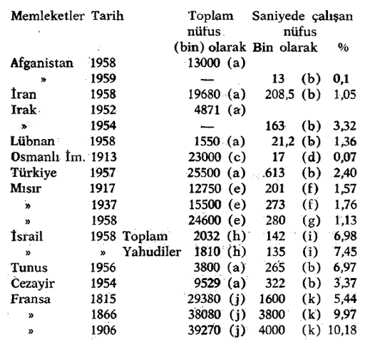

İslam ülkelerinde kapitalistik bir sektörün, hatta bazı devirlerde çok yaygın kapitalistik bir sektörün hep varolduğunu görmüştük. Ama Ortaçağ gözönünde tutulursa, bu ülkelerde kapitalist bir sosyo-ekonomik kuruluştan söz edilemez, [çünkü] bu kuruluşun kapitalist bir ekonomik sisteme dayanması gerektir yani kapitalist sektörün, diğer sektörleri etkileyerek hâkim bir rol oynadığı ama bu sektörlerin pek etkisinde kalmadığı bir sistemi gerektirir. Durum böyle olmaktan uzaktı.
Halen, Müslüman ülkelerin çoğunda bu meseleyle karşılaşıldığı bir gerçektir. Kapitalist sektör, hiç değilse, bu hâkim rolü oynamaya başlamıştır. Birkaç yıl önce Amerikalı bir iktisatçı, Irak'ta ye İran'da yıllık yatırımın %20'sinden, Türkiye’de % 50'sinden, Suriye ve Lübnan'da %80’inden bu kesimin sorumlu olduğunu tahmin ediyordu. Kapitalist sektörün mutlak bir hâkimiyete bürünecek kadar yaygınlaşması mümkündür. Bu süreç, devlet sektörünün hâkim olduğu bir başka ekonomik sistemin yerleşmesiyle durdurabildi ya da sonuçlandırıldı. Ama bu takdirde, ya bu kopma kapitalist sektörün, Ekim Devrimi’nde Rusya'da olduğu gibi, belirtilen anlamda yayılma niteliği gösterdiği bir durumda meydana gelmiştir ya da, esas itibariyle, mevcut kapitalist işletmelerin devletleştirilmesinden (Mısır) ibaret kalmıştır. Öyleki, bu ekonomik sistemi belirtmek için ileri sürülen «devlet kapitalizmi» terimi, hiç değilse bu bakımdan doğrulanmış bulunmaktadır.
Kapitalist sektörün hâkim olduğu kesin bir an tespit etmek, tabiatiyle güçtür. Avrupa, Amerika ve Japonya’daki olgular, tüm olarak da gözönünde tutulsa, bunun için kapitalist üretimin, başka bir deyişle, kapitalist üretim tarzına göre kurulmuş sınaî işletmenin varolması ve bir gelişme göstermesi gerektiğini bize öğretmektedir. Biliyoruz ki, kapitalist üretim tarzının bu hâkimiyeti ne küçük ticarî üretime bağlı zanaat işletmeleri ne de manüfaktürler değil, ancak hakiki bir sanayi, makinalaşmış fabrikalar söz konusu olunca ortaya çıkar.
Oysa, olgulara şöyle bir bakmak bile, sanayinin, Müslüman ülkelerde ancak son sıralarda gelişmeye başladığını bize göstermektedir. Söylenenleri kanıtlamak için hiçbiri kesin olmayan birkaç rakam vereceğim. «Aktif nüfus» tanımının ve buna benzer kavramların yarattığı-güçlükleri gidermek amacıyla, toplam nüfusa oranla sanayideki işçi sayısını ele alacağım. Böylece, bilimsel kesinlik iddiasında olmayan aşağıdaki tablo ortaya çıkar.

İleri sürülen rakamlar üzerindeki tereddüt ve bu rakamların tespitinde kullanılan ölçülerin tutarsızlığı ne kadar büyük olursa olsun, gene de apaçık bir olguyu göstermektedirler. Sömürgeleştirilmiş olanları hariç (kısmen), bir yanın yüzyıldan beri görülen bazı ilerlemelere rağmen ülkeler, 1952-1959 yıllan arasında, XIX. yüzyılın birinci yansındaki Fransa'nın sanayileşme düzeyine erişmekten henüz uzaktılar. 1914'de sınai kapitalizm, bütün bu ülkelerde pez ak gelişmişti. Bununla beraber, bu devreden itibaren, bu olaya kesin bir önem verilmişti. 1914’de bir Amerikalı, «Bütün Asya’yı Modern sanayi makinalaşma sarmıştır» diye yazıyor. O zamandan beri, bu sektörün gelişmesi için birçok çaba sarfedildi.
Bu makalede incelediğim geniş sorun çerçevesi içinde ortaya atılması gerekli sorunlar bence şunlardır:
1 — Müslüman ülkelerde kapitalist sektörün böyle yaygınlaşmasının kökü içerde midir, yoksa dışarda mıdır? Başka bir deyişle, bu yaygınlaşma, bir dış etkiyle mi meydana gelmiştir, yoksa kendiliğinden bir gelişmenin sonucu mudur?
2 — Çağdaş devirde kapitalizmin bu gelişmesini İslâm dini engellemiş midir, yoksa kolaylaştırmış mıdır ve bu ne dereceye kadar böyledir?
3 — Çağdaş kapitalizm, Müslüman ülkelerde özgül bir yol izlemiş midir? İzlemişse bunun sebebi İslâm dini midir?
Mesele çapraşık hale getirildi ama halledilmesi oldukça kolaydır. Gene de bazı ince ayrımlara başvurmak [gerekecektir].
Mısır’ı ele alalım. Mısır’da sanayi, Muhammed Ali (1805-1849) zamanında, ama Devlet sanayi olarak 1816’dan itibaren kurulmuştur. Yeni binaları kuran, bütün yatırımları yapan, işçilerin ücretlerini ödeyen, üretilen malları satan Devlet’dir. Sanayi’deki Devlet tekeli, bu paşa için de çalışan, zanaat atölyelerine kadar girmiş. Çalışan işçilerin sayısının 70000 den fazla olduğu tahmin edilmektedir (belki de o zamanki nüfusun %2,3’ü). Devlet kapitalizminin sanayi alanında kurduğu bu tekel, Ali'den sonra kaldırıldı. Hangi şartlarda kaldırıldığını göreceğiz. Ekonomik liberalizm, Avrupa mallarının rekabeti karşısında, özel zanaatkârlığın yeniden doğması ve büyük Mısır işletmelerinin birçoğunun kapanması sonucunu doğurdu. 1873’de maden sanayinde aşağı yukarı 7000 işçi'nin çalıştığı birkaç atölye ile 28000 işçinin çalıştığı dokuma ve elbise sanayi kalıyordu. İngiliz işgali (1882) bu süreci güçlendirip hızlandırdı. Gelişen sanayi tamamen yabancı sermayenin, özellikle İngiliz ve Fransız sanayinin eline geçti. Mısır sermayeleri olduğu gibi, büyük toprak mülkiyetine yatırıldı. 1917'de ticaret ve sanayi komitesi, bir Mısır sanayi yaratmak için uğraştı. A. Abdel Malek aynen şöyle yazmaktadır: «Şehirlerdeki yeni burjuvazi - tüccarlar, iş adamları, serbest meslek sahipleri, özellikle avukatlar ve mühendisler - için, büyük toprak sahipleri arasındaki ilerici kanadın kullanılmayan sermayelerine bir faaliyet' ve yatırım alanı sağlamak söz konusudur. Talat Harb, amacı bu yeni Mısır milli sanayini finanse etmek olan Miçr bankasını 1920’de kurdu. Siyasi bağımsızlık mücadelesinde, bu mücadelenin burjuva yöneticileri Mısırlıları bu bankanın finansmanına ve işletmelerinin üretimlerini arttırmasına katkıda bulunmaya çağırıyorlardı. Bu, aslında, yabancı kapitalizmle birçok bağı olan gerçek mısır kapitalist sektörünün kuruluşunun başlangıcıdır. Eski kapitalistlerin bir kısmıyla (Müslümanlar) ve yeni kapitalistlerle (bunların bazıları devlet memuru olmuştur, bazılarının da, şüphesiz tâbi bir durumda kalan özel sektörde çıkarları vardır) ilişki kuran Nasırcı askeri bürokrasi tarafından, 1952'den sonra büyük kısmıyla tedricen millileştirilip yönetilecek olan sektör budur.
Mısır gözönünde tutulmazsa, genellikle Osmanlı imparatorluğunda, XIX, yüzyıldan önce hakiki kapitalist sınai işletmelerden söz edilemez, özel manifaktürlerin sayısı azdır. Her halde, kullanılan teknik «oldukça az gelişmiştir ve esas itibariyle, el-emeği üzerine kurulmuştur. Henüz (zanaatkârlık safhasındaki fabrikalarda ve büyük atölyelerde bile makinalar pez azdır ya da yoktur». Büyük işletmeler, (tekniğin çok gelişmediği) devlet işletmeleridir. 19. yüzyılda Avrupa’nın etkisi başlı başına bir tehlike olunca, Osmanlı yöneticileri, Muhammed Ali'nin yaptığı gibi, büyük bir Devlet sanayii yaratarak bir tepki göstermeye çalışmıyorlar. Gerçi, bazıları böyle bir şeyi tasarladılar ama siyasi şartlar ve malî durumun bozukluğu bunu gerçekleştirmeye el vermedi. Üstelik, özellikle İngilizlerin etkisinde kalarak, Muhammed Ali'nin eserlerinin tahrip edilmesine fiilen katıldılar. 1820 Fermanıyla tamamlanan 1818 İngiliz-Osmanlı ticaret antlaşması, ithalat vergisini malın değerine göre %3 olarak sınırlandırıyordu. Bunun yerini, kutsal ticaret hürriyeti adına tekelleri ortadan kaldıran ve bu temel tedbirin karşılığında, ihracata %l2 vergi konulduğu halde, ithalata değerine göre %5 vergi koymayı Öngören anlaşma almıştı. Dürüst bir yorumcu olan Belin'in safça söylediği gibi, «bu, yerli çıkarlardan daha çok yabancı çıkarlardan yana olmaktı». «Gerçekte, (tarihçi şarkiyatçılara genellikle, belirtmeyi lüzumsuz buldukları) ve aynı yıl bütün Avrupa devletlerine uygulanan bu anlaşma bir Osmanlı sanayinin kurulması yolundaki her teşebbüsü önceden engelliyordu. 1812 ile 1841 yıllan arasında Işkodra ve Tirnova’da ipek dokuma tezgâhları sayısı 2000'den 200’e düştü. Anadolu'da her çeşit global ipek üretimi 19. yüzyılın ilk yarısında, 50 yıl öncekinin onda biriydi. Aynı devre içinde Halep'te pamuklu ve ipekli kumaş üretiminin değeri, 100 milyon kuruştan 8 milyon kuruşa düşmüştü. 1838 antlaşması, Palmerston ve İngiliz filosu tarafından Mısır’a 1840'da zorla kabul ettirilmiş ve tövbekar Muhammed Ali, serbest mübadele dini huzurunda günah çıkarmıştı: «Mevcut anlaşmalarla onaylanmış ticaret hürriyetinin faydalarını (üstünlüklerini) kabul ediyorum. Bugün benim için apaçık olan şeyi inkâr edemem. Beni, tekeli kurup devam ettirmeye sadece olağanüstü şartlar zorladı19»,
Yön değiştiren bazı tepkimelere rağmen (özellikle ithalat gümrüğünü %8 yükselten anlaşmalar. Bu oran 1907’de %11’e yükseltilmişti ama hakiki bir himaye için gene de yetersizdi) Osmanlı İmparatorluğu, yabancı sermaye boyunduruğuna doğru hızla yol alıyordu. Muharrem kararnamesi (20 Aralık 1881) memleket ekonomisinin tümünün kontrolünü, Osmanlı İmparatorluğu Bankası, Osmanlı Duyunu Umumiyesi gibi Avrupalı örgütlere veriyordu. Sonuç belli. Yabancı işletmeler, gayrimenküller hariç, her türlü vergiden muaf tutuluyordu. Osmanlı imparatorluğundaki kapitalist işletmelerin çoğu yabancı işletmelerdi. İsmen Osmanlı olan işletmeler, Avrupa sermayesine ya da büyük çoğunluğu ile Avrupa’ya sıkı sıkıya bağlı azınlıkların sermayesine dayanıyordu. 1913'de Osmanlı İmparatorluğunda 269 sınai işletme vardı ve bunun 242'si çalışıyordu. Sermayelerinin %10'u yabancılara, %50’si Yunanlılara, %20'si Ermenilere, %5’i Yahudilere ve nihayet %15'i de Müslüman Türklere aitti.
Durum, mesela Suriye bölgesinde daha ayrıntılı incelenebilir. Lübnan’da 19. yüzyılın başlangıcında, ilk sıralar iyi olan ama Osmanlı devrindeki şartların çökerttiği bir ipekçilik vardı: Köylü koza yetiştiriyor ve ipek, köylerin ya da emirlerin ortak mülkiyeti olan ilkel çıkrıklar üzerine sarılıyordu. Kırk kadar iplik eğirici ile gelip Bteter’de bir iplik fabrikası kuran Nicolas Portalis adında bir Fransız, kapitalist temeller üzerinde 1840’a doğru ipekçiliği geliştirdi. 1850’ye kadar, üçü Fransızlara ait olan 5 yeni iplik fabrikası kuruluyor. Bab-ı Ali’nin Lübnan'a tanıdığı özerk anayasa 1864'de Lübnanlıların benzeri işletmelere sermaye yatırmalarına yol açtı. 1885'de sadece 5 tanesi Fransızların olan 105 iplik fabrikası vardı ama bütün bu iplik fabrikaları Fransız sermayesine, özellikle de Lyon sermayesine dayanıyordu. İpek kozası satın alımına tahsis edilen sermayenin yarısı, pratikte %10’a yükselen bir faiz haddi ile Lyon'dan ödünç alınmıştı. Buna karşılık, Lübnan ipeğinin hemen hemen tümü Lyon pazarını besliyordu.
Suriye’de genellikle, birinci dünya savaşı döneminde, Siyonist hareketi için çalışan iyi bir gözlemcinin belirttiğine göre, yerliler zanaatkârlık ve ev sanayi ile uğraştıklarından, büyük sanayinin tümü Avrupalıların elindedir. Gözlemci, 50’den fazla işçinin çalıştığı fabrikaların sayısının l00’den az; 100'den fazla işçinin çalıştığı fabrikaların ise ancak 12 olduğunu tahmin etmektedir. 300’den fazla işçi'nin çalıştığı fabrika yoktur.
İran’da 1921'den önce, fabrika sayısı son derece azdı. İ891’de kurulan kibrit fabrikası (tek kibrit fabrikası) ve 1895'de, Çanî od-Dowle adındaki bir Devlet adamının, bir Belçika şirketiyle işbirliği yaparak Kahrizak’da kurduğu bir şeker fabrikası istisna olarak gösterilmektedir. Bu şeker fabrikası, ya batıl söylentiler ya da ithal malı şeker rekabeti yüzünden hemen kapandı ve diğer şeker fabrikalarının açılması için tam otuz yıl beklemek gerekti. Herhalde, Anglo-Iranien Oil Company elindeki petrol ihracı bir yana bırakılırsa, 1914 savaşından önce hatta daha da sonra sanayi güçsüzdü. Hiç şüphe yok ki, sanayiyi köstekleyen belli başlı faktörler arasında, İran'ın bir askerî yenilgisinden sonra Rusya’nın (1828) de zorla kabul ettirdiği Turkmançay anlaşmasından beri yabancılarla imzalanan ticari antlaşmaları saymak gerektir. Turkmançay anlaşması gereğince iki memleket arasındaki bütün ithalat ve ihracata %5 bir gümrük resmi konuyordu. Diğer Devletler'de aynı örneğe uydular. Bu da, doğmakta olan sanayiye, gerçekten ihtiyaç duyduğu muhtemel bir gümrük himayesi sağlamak imkânını ortadan kaldırıyordu. 1828’den itibaren İngiltere, İran’dan 11,5 milyon yarda, 1834’de de 28,6 milyon yarda pamuklu bez ithal ediyordu. Siyasi hâkimiyetleri gereğince yabancılara tanınan imtiyazlar, yabancı rekabetin ekonomik etkisini çok artırmıştı. Buna karşılık, ekonomik geri kalmışlık, fiatı karşısında siyasi güçsüzlük yaratıyordu. Fransız doktoru Fettvrier, «imtiyaz vere vere İran yakında tamamen yabancıların eline düşecek» diye yazıyordu. 1885 ile 1900 arasında, on beş ülke lehine «kapitülasyonlar» imzalandı. Avrupalıların çıkarlarına zarar verecek hiçbir şey yapılamazdı. 1905’de coğrafyacı Elisee Reclus şöyle yazabiliyordu: «Rusya ile İngiltere şimdi iki rakip metbudur. İran hükümeti, onların arzularına ve kaprislerine boyun eğmek, lütuflarına nail olmaya çalışmak, onları öfkelendirmekten ve isteklerde bulunmaktan kaçınmak zorundadır» Halk tepkimesinin ilk büyük gösterisi, tütün tekeli imtiyazını (üretim, satış, ihracat) 1890 Martında İngiliz kapitalisti G. F. Tallot’a veren ekonomik bağımlılığa karşı yönetildi. Ama 1905-1911 İran Devrimi özellikle Rus müdahelesi sayesinde bastırıldı. Devrim, 31 Ağustos 1907'de Rus-İngiliz anlaşmasının imzalanmasını önleyemedi. Bu anlaşma gereğince, iki büyük Devlet İran’daki önemli bölgeleri paylaşıyorlar ve İran hükümetini ancak bir ay geçtikten sonra bundan haberdar etmek zahmetine katlanıyorlardı. Bu şartlar içinde hiçbir bağımsız sanayileşme çabası mümkün değildi.
1920’den beri sorun hiçbir güçlük yaratmıyor ve hiçbir şüphe uyandırmıyor. Bütün bağımsız Müslüman ülkelerde hatta yerli burjuvazinin bazı teşebbüs imkânının bulunduğu az-çok sömürge ülkelerde bir kapitalist sanayi ya da Devlet sanayi kurmak için sarf edilen çabayı, Avrupa ve Amerikan kapitalizmi sınırlandırıyordu. Modern bir Mısır sanayinin kurulması için canla başla çalışan mısırlı kapitalist Talat Harb, bir Fransız gazetecisiyle yaptığı tartışmada şöyle yazıyordu: «Sizi örnek almayı arzu ediyoruz... İsteklerimiz pek mütevazıdır... Biz de çift çubuk sahibi olmak, başkaları gibi yaşamak, üretmek, üretimi artırmak, ürettiğimizi ihraç etmek, tüketmek ve tüketimi artırmak istiyoruz. Bu amaca erişmek için, sizi örnek alarak çalışıyoruz. Ve bize gösterdiğiniz bu yoldan ötürü size minnettarız».
Modern Türkiye'nin en açık görüşlü ve kemalist devrede sözü en çok dinlenilen ideologlarından biri olan Türk sosyologu Ziya Gökalp, «Modern Devlet büyük sanayi üzerine kurulmuştur. Yeni Türkiye Modern bir devlet olmak için her şeyden önce milli bir sanayiyi geliştirmelidir. Avrupa'nın en yeni ve en gelişmiş tekniklerini uygulamak zorunda olan yeni Türkiye, fertlerde teşebbüs zihniyetinin doğmasını bekliyemez. Askerî teknik alanında yaptığımız gibi, milli bir çabayla, sanayide Avrupalılara erişmeliyiz» diye yazıyor. Aynı Ziya Gökalp «Türk milletine, İslâm dinine, Avrupa medeniyetine ait olmak» sloganını ortaya atmıştı. Bütün kemalist kadroda Avrupalılaşma arzusu vardır. «Biz Avrupalıyız. Buna hepimiz katılıyoruz. Bu söz; zengin, fakir, genç, ihtiyar hepimizin dilinde. Avrupalı olmak bizim idealimizdir». Bir yıl önce, bizzat M. Kemal Atatürk’ün heyecanla belirttiği gibi, «dağları delen göklerde yol alan, en uzak yıldızlara varana dek her şeyi gören bu modern medeniyet, karşı durulması imkânsız bu bilim» Avrupa medeniyetidir. Sanayileşme yani devlet işletmesi, özel kapitalist işletme bu modele göre kuruluyor. Açıkça bildirilen devletçilik ilkesine rağmen, özel kapitalist mülkiyet her bakımdan teşvik edilip yardım görmektedir. 1927'de kabul edilen sanayiyi teşvik kanunu, kısa zamanda büyük bir etki yarattı. Çok sınırlı bir yüzölçümü içinde 1913’de 242 olan sınai işletmelerin sayısı 1933'de 1400’e yükseldi. Sanayi işçisi sayısı 1923'de 16-1700 iken, on yıl sonra 62000’e, 1939'da da aşağı yukarı 90000’ne yükseldi.
Bu, İran’da da açıkça görülmektedir. Sözü uzatmamak için bugünkü Şahın, babası Şah Rıza ile ilgili hatıralarını okumakla yetinelim. «Babam İran’ın büyük geçmişine hayrandı. Eski törelerimizin ilerilikle bağdaşanlarını kurtarmak istiyordu. Hem toprak ve millet bütünlüğünün hem de halkın mutluğunun hızlı bir batılılaşmayı gerekli kıldığını anlamıştı. Şüphesiz yabancı ülkeleri pek az ziyaret etmişti; bununla beraber Batı'da olduğu gibi,, modern fabrikaların, barajların, modern sulama tesislerinin, modern şehirlerin ve orduların, demiryolu ağlarının kurulmasını istiyordu. Bundan dolayı, İran Şahı memleketini sanayileştirmek amacıyla 1930’dan itibaren bütün gücüyle çalıştı.
Gerçi Türkiye’de ve İran’da sanayileşme çabası, özellikle başlangıçta devlet sınai işletmelerinin yaratılmasıyla kendini gösterdi ve Türkiye’de «Devlet sosyalizmi» ya da «devletçilik» adı altında kanunlaştı ama bu, ne kapitalist Batı’nın yolundan ayrılmak ne de hayalî bir geleneğe uymak amacıyla yapılmıştı. Yukardaki metinde Ziya Gökalp’ın çok iyi açıkladığı gibi, bu bir zorunluluktu. Bir Türk hukukçusunun, İstanbul Hukuk Fakültesi Dekanının sözlerini de burada belirtelim: «Özel işletmelerin teşebbüslerinin ve imkânlarının yetersizliği, ekonomik eğitimin ve sosyal işbirliği anlayışının çok az gelişmesi yüzünden bu muazzam işi gerçekleştirmek, tabiatiyle, milli idealin temsilcisi olan Devlete düşüyordu. İşte Türkiye’de devletçiliğin anlamı budur. Demek ki, Cumhuriyet'in hareket ilkesi olarak Devletçiliği seçmesi bir doktrin hevesi değil, millî bir zorunluluktur. «Bir Türk iktisatçısıyla, Belçikalı bir profesörün birlikte yazdığı bir eserde «Devletçilik - en yetkili kişilerin tanımladığı gibi - özel teşebbüsün durduğu yerde başlar ve ilkesi bakımından ne kapitalizme karşıdır ne de yabancı düşmanıdır». 1950’ye kadar Türkiye’yi tek başına yöneten Halk Partisinin programı açıkça öngörmektedir ki «özel çalışmayı ve faaliyeti temel bir fikir olarak telâkki etmemize rağmen, genel ve hayati çıkarların söz konusu olduğu meselelerde milleti ve memleketi mümkün olduğu kadar kısa bir zamanda mutluluğa götürmek için, Devletin fiilen müdahale etmesi temel ilkelerimizden biridir. Ekonomi konusunda özel işletmeleri teşvik etmede ve girişilen işi düzenleyip kontrol etmede fiilen yapıcı olmak Devletin yararınadır».
İran Şahı da açıkça söylemektedir: «teknisyen ve yönetici eksikliğinden ötürü (çünkü özel yatırımlar sürekli değildir), Hükümet yol göstermek zorunda kaldı. Babamın devrinde bu, böyleydi; bugün de bazı alanlarda böyledir. Mesela, bugün yeni çelik sanayini sadece hükümet kurabilir... Ne olursa olsun, bizim politikamız, hükümetin mevcut fabrikalarını tedrici bir şekilde özel kumpanyalara devretmektir. Bunun için, üretimi inceleyecek, özel teşebbüse devir ihtimali karşısında verimi mümkün olduğu kadar artırmanın yollarını gösterecek Amerikalı organizasyon danışmanlarına başvurduk».
Kısacası, bu memleketlerde yöneticilerin ideali, özel kapitalist işletmedir. Ama yöneticiler, yerli özel sermayenin modern sanayiye pek istekli olmadığını gördüler çünkü, özel sermayenin önünde bu faaliyet için hiçbir örnek yoktu; görüldüğü gibi, Modern kapitalizmin tohumları kendiliğinden yeşermemişti. Üstelik, her zamanki gibi, bu ülkelerin ekonomik dönüşümü için daha faydalı yatırımlar en az rantabl olanlardı. O halde, Devlet bir yandan, yerli sermayedarlara, nasıl bir yatırım yapmaları gerektiğini öğretmek için eğitici bir rol (Mısır'da Muhammed Ali zamanında olduğu gibi), öte yandan, rantabl yatırım yapmasını kolaylaştırmak için özel kapitalizme yardımcı bir rol oynamak zorunda kaldı. Çünkü Devlet, rantabl olmayan yatırımları, her şeyden önce de, modern bir ekonomi için gerekli altyapının kurulmasını kendi üzerine alıyordu.
Az-çok bağımsız kalmış belli başlı Müslüman ülkelerde sanayinin evrimiyle ilgili olarak yapılan özetlemenin ışığında ve ileri sürülen olguların yetersizliğine rağmen, Müslüman Doğu’daki sınai kapitalizmin, Batı’da-kinin bir taklidi olduğu açıkça görülmektedir. Kırk yıl önce, sanayinin en fazla geliştiği yer, Muhammed Ali zamanında bir devlet sanayinin kurulduğu Mısır’dır. Muhammed Ali’nin bu yolu seçmesine sebeb, yerli bir sanayi kapitalizminin kendiliğinden gelişmesine bel bağlamanın boş olduğunu (bir bakıma haklı olarak) anlamasıdır. Mısır paşası bunu iyice biliyordu. 1833'de baron Boislecomte’a bunu açıkça söylüyor: «Her şeyi ele geçirdim. Ama bu, her şeyi üretken kılmak içindi. Benden başka kim bunu yapabilirdi? Gerekli teşebbüsleri kim gerçekleştirebilirdi? Bu memlekete pamuğu, ipeği bir başkasının getirebileceğini sanıyor musunuz?». Sovyet tarihçisi F. M. Atsambânın sandığı gibi; Muhammet Ali gelişme halindeki süreçleri hızlandırmada değil, tersine, Avrupa modeline uygun yeni bir sürece başlamak için mevcut şartlarla ilgiyi koparmada bir rol oynamıştır. Her yerde Avrupa’nın kudreti yerli hükümetlere, sanayileşmenin milli planda ne kadar arzu edilir bir şey olduğunu gösteriyordu. Ama 1920’den sonraki yıllarda, hiç kimse Muhammed Ali’yi taklid edemedi. Zekâ, anlayış, enerji, ve şartlardan yararlanmayı gerektiren bir işti bu. Herkes sanayileşmenin üstünlüklerini iyice anlamıştı ama artık çok geçti. Batı emperyalistlerinin askerî ve ekonomik gücü, Mısır örneğini izlemeyi önlemese bile, son derece güçleştiriyordu.
Zaten Mısır tecrübesi, 25 yıl boyunca ancak İngiliz-Fransız rekabeti sayesinde gelişebilmişti. 1840’da oldukça zor kurulan Avrupa Birliği, bu tecrübeyi başarısızlığa uğrattı. Avrupa’nın üstünlüğü, Avrupa sermayesini zorla getirdi ve Müslüman Doğu'yu sanayileştiren de bu sermaye oldu. Yerli sınai kapitalizm, ancak Avrupa kapitalizmini model alarak, onu taklit ederek ve genellikle de onun hâkimiyeti altında gelişti. Avrupa’nın üstünlüğü, bu gelişmeyi, özellikle Avrupa tekniğinin üstünlüğünden, himaye yokluğundan, zorla kabul ettirilen serbest mübadeleden, bağımsız kalmış ülkeleri mali borçlar yoluyla boyunduruk altına almaktan ve onların ekonomik ve askeri güçsüzlüklerinden dolayı son derece güçleştiriyordu. Avrupa’nın bu üstünlüğü olmasaydı, yerli bir sınai kapitalizminin gelişmemesi için hiçbir sebep (Japonya’daki gibi) olmazdı. 1800’den itibaren, hatta daha öncesinden Avrupa’nın üstünlüğü bir olup-bitti haline geldiğinden, yerli sanayinin, ancak Avrupa örneğinden esinlenerek gelişebileceği açıktır. Muhammed Ali zamanında her hangi bir sınai işletme kurmak için, hiçbir yerde özel bir teşebbüs hatta özel bir tasarı belirtisi görmüyoruz. Ve sınai Devlet işletmesi, açıktan açığa Avrupa’yı örnek alıyor.
Bununla beraber, modern devirde bir sektörde, esas itibariyle, büyük bir yerli sanayinin gelişmesinden söz edildi, özellikle Mısırdaki tarım kapitalizmi söz konusudur. Abdel Malek, Muhammed Ali’nin (ölümü 1849) son devreleriyle 1952 devrimi arasında Mısırda «sömürge tipinde, geri kalmış, tarımın hâkim olduğu ve feodal zamandan miras kalan uygulamalarla dolu bir kapitalizmin» kurulduğunu görmektedir. Gerçekte, 1880’den ve İngiliz işgalinden sonra, monokültüre doğru giden pamuk ekimi yoğunlaşınca toprakların ücretli işçiler tarafından işlenmesi gelişiyor. 1907 nüfus sayımına göre, aktif kır nüfusunun %36,6’sı tarım işçilerinden meydana gelmişti. 1958-1959’da topraksız köylü sayısı kır nüfusunun %74 idi. Bunlar gerçekte başka geçim kaynağı olmayan bilkuvve ücretli işçilerdi ama, bu yüzdeye dahil 14 milyon insanın sadece 3 milyonu ücretli işçiydi. Ancak daha gözde (zengin) toprak sahiplerinin yanında çalışabilen, küçük işletme sahiplerini yani 1.075.000 köylüyü, aşağı yukarı kır nüfusunun %5’ini temsil eden 215000 aile reisini de bunlar arasında saymak gerekir. Aynı tarihte, büyük topraklar arasında (20 feddandan fazla olanlar), kiralanmamış olan ama doğrudan doğruya mülk sahibi tarafından, yani pratikte ücretli işçiler aracılığı ile işletilen toprakların yüzölçümünün %56 olduğu tahmin edilmektedir.
Demek ki, kapitalist ilişkiler kırda çok önemli bir rol oynamaktadır. Bundan, bu ilişkilerin bütün toplum ölçüsünde hâkim oldukları sonucu çıkar mı? Abdel-Malek, verdiği kredilerle tarıma hâkim olan banka sermayesinin (esas itibariyle yabancı sermayenin) gelişmesini hatırlatıyor. Bütün bunlar, tarım ürünlerinin büyük bir kısmının satılmasına bağlıdır. Her şeyden önce, başlıca tarım ürünü de dünya pazarında satılan pamuktur. H. Riad’ın işaret ettiği gibi, en nadir yani en önemli üretim faktörü sermaye değil, topraktır. Toprak aristokrasisi arasında yer almak için büyük bir sermayeye sahip olmak yetmez. Hatta bu toprak aristokrasisi kapitalist ilişkilere de dayanmış olsa. Bu demektir ki: kapitalist olmayan ilişkilerin önem kazandığı kırda sermaye hâkim değildir. Tarımda kapitalizm de tek başına yahut ticaret ya da banka sermayesindeki önemli gelişmeyle birlikte toplumu bir kapitalist ekonomik sosyal kuruluşa dönüştüremez. Toprağı işletmenin kapitalist şekilleri ilk Çağ'da vardı ve Orta-Çağ İslâm dünyasında da bunu görmüştük. Tarım ürünlerinin satılması ticaret ya da banka sermayesinin hâkim olduğu bir dünya pazarıyla ilişkisi, mutlaka bu yönde gelişmez. Bu, Roma İmparatorluğu zamanında da vardı. Doğu Avrupa tarımının,' tam kapitalist gelişme halindeki Batı-Avrupayla ticari ilişkisinin önce, Elbe’nin Doğusunda «ikinci bir toprak köleliğine (servage)» nasıl meydan verdiği bilinmektedir.
Mısır’da 1880’den sonra kapitalistimsi bir sektörün geliştiği açıkça görülmektedir. Burada önemli olan şudur: bu gelişme, Avrupa’nın etkisiyle meydana gelmiştir. H. Riad, bunda özellikle nüfus baskısının sonucunu görmektedir. Ama, başka yerde olduğu gibi burada da, nüfus baskısının kendisi, şu ya da bu şekilde, kapitalist Avrupayla ilişki kurmanın sonucudur. Bunun, tarım ürünlerinin tümünün satılmasıyla (ticarileştirilmesiyle) bir bağıntısı olduğu şüphesizdir. H. Riad’a, göre, ticaretin geliştirilmesi her halde gerekliydi. Ama yiyecek maddeleri kısmen ticarileştirilemezdi. Pamuk zorunlu olarak ticarileştirilmişti ve pamuk monokültürünün gelişmesi şüphesiz ki dünya pazarıyla ilgilidir. Bilindiği gibi, pamuk ekimi, Avrupa’yı pamuk kaynağından yoksun bırakan Amerikan İç Savaşı sayesinde tutundu.
Avrupalı olmayan halklarda aşağılık hiçbir şey kabul etmemek gibi övgüye değer bir arzu ile hareket eden Sovyet yazarlarının bir kısmı Doğu ülkelerinin Avrupa’nın etki alanına girdiği sırada her şeye rağmen, kapitalist sosyo-ekonomik kuruluşa çok yaklaştığını ileri sürmek istedi. Zavallı V. B. Loutsky, Haziran 1960’da «Doğu ülkelerinin sömürge ya da yarı-sömürge olmadan önceki sosyo-ekonomik gelişme düzeyi, tartışılacak bir sorundur, çünkü Marksist tarihçiler, bu konuda batılı Şarkiyatçılardan daha ileri bir durumdadırlar» diyordu.
Avrupa dışındaki ülkeler aydınlarının çoğu tarafından coşkunlukla benimsenen böyle kavgacı bir iddia her ideolojinin daima başvurduğu ve özellikle devrimizde salgın hale gelen bu ideolojik totalitarizmin20 açık bir görünüşüdür. Ben de uzun yıllar boyunca bu salgına uğradığını ve yayılmasına canla başla katkıda bulunduğum için ahlâki plânda bunu eleştirmekten sakınacağım: sosyal gerekirliklerle mücadele eden insanın tabiatına böylesine işlemiş, bu kadar güçlü bir eğilimin yenilebileceğini düşünmek boşunadır. Kitlelerin asil amaçlar uğruna harekete getirilmesi bu sayede mümkünse, bu eğilimin yok edilmesini istemek belki de arzu edilir bir şey değildir. Ama aklın da, açık-görüşlülüğün de hakkını vermek gerekir. Bazı anlarda, bazı şartlarda, bir dereceye kadar sağduyudan (açıkgörüşlülükten) ayrılma pahalıya mal olan pratik bir hatadır.
Burada amacım sadece hakikati araştırmak olduğundan, başka yerlerde yaptığını gibi aşırı ideologlara doğu halklarının beşerî değerinin söz konusu olmadığını belirtmekle yetineceğim21. Irkçı tezlerin sağlamlığı bugüne kadar bilimsel şekilde doğrulanmış değildir ve görülecektir ki açıklamamın büyük bir kısmı, zararlı oldukları için değil, bilgilerimizin bugünkü durumunda, yanlış oldukları için, bunları yalanlamaktadır. Avrupa dışındaki halklar, kapitalist bir ekonomik-sosyal kuruluşu geliştirmedilerse, eğer Avrupa halkları, böyle bir yapıya eriştilerse, bu ne onların «kusurlarından» ne de ötekilerin «niteliklerinden» ötürüdür. Bundan dolayı ne onları cezalandırmak, ne de ötekilere ödül verilmelidir. Ne onlar bir aşağılık duygusuna kapılmak, ne de ötekiler gurur duymalıdırlar. Derin sosyal ve tarihî faktörler böyleydi. İnsanlar bunlara karşı ya da bunların uğruna pek az şey yapabiliyorlardı. Bu, insanların kararlarının önemli olmadığı anlamına gelmez. Ama bu kararlar özel taşanları hedef almıştı ve bu genel evrimin kapsamını, hiç olmazsa belli bir safhadan önce, kimse farkedemezdi. Bu safhaya erişilince faktörler ve olaylar çarkında öylesine ileri gidildi ki hiçbir insan iradesi, Tanrılaştırılmış bir tarihin yüce iradesi gereğince değil, ilerleyen sosyal mekanizmaların objektif gücünün etkisi gereğince, olayların akışım değiştiremezdi.
Lehte veya aleyhde sonuçlar çıkarmadan ama alayı da elden bırakmadan belirtelim ki, Sovyet yazarlarının ileri sürdükleri ve Marx ile Engels'in tezleriyle tam çelişme halindeki kanıtlar hiç de doğru değildir. Loutsky ve diğerleri, meselâ Mısır'da manüfaktürlerin gelişmesini ileri sürüyorlar. Ne var ki, manüfaktür (hem özel hem de Devlet manüfaktürü) kapitalistimsi sektörü oldukça gelişmiş ama hiç de kapitalist sosyo-ekonomik bir kuruluşa yönelmeyen çeşitli toplumlarda antikiteden beri görünen bir olaydır. Marx, «manüfaktür, meselâ, İtalyan şehirlerinde olduğu gibi, bambaşka bir devreye ait bir çerçeve içinde tek tek ve mahalli olarak loncalarla yanyana gelişebilir. Ama sermayenin, bir çağa damgasını vuran varoluş şartları sadece mahalli olarak değil, büyük ölçüde de gelişmek zorundadır. Loncaların dağılması ve ustabaşıların sanayici kapitalistler haline gelmesi bu olguyu çürütmez. Bu ender bir durumdur ve eşyanın tabiatına uygundur. Kapitalistle işçinin (ücretli işçinin) göründüğü yerde, lonca tüm olarak, ustası ve çırağı ile ortadan kalkar» diye belirtiyor.
Kapitalizme hazırlık belirtisi olarak ileri sürülen diğer nitelikler için de durum aynıdır: şehirlerin gelişmesi, toprak rantının evrimi, özel toprak mülkiyetinin gelişmesi. Bu olaylar, kapitalist kuruluşa muhtemel bir geçiş için (azami) gerekli şartlardır. Bunlar, önemli bir kapitalistik sektörü ihtiva eden ve bir iktisadi sisteme dayanan sosyal bir yapının unsurları olabilirler. Belli yapısal şartlar ve olaylardan dolayı, Avrupa'da, kapitalist sosyoekonomik kuruluş buna benzer sosyal bir yapı üzerinde gelişebildi. Ama bu yapının, zorunlu olarak kapitalist kuruluşu yaratacağını gösteren hiçbir şey yoktur. Demek ki, V. B. Loutsky’nin «Doğu’daki feodal Devletlerin çoğu kapitalizme şu ya da bu şekilde gebeydiler» diye kullandığı teşbihlerle dolu formülünün anlamsızlığı ortadadır. Maksat teşbih yapmaksa, bu toplumların gelinlik çağda oldukları söylenebilir. Bir kadının gelinlik çağda olmasından mutlaka doğum yapacağı sonucunu hiç kimse çıkaramaz. Kısır kadınlar ya da doğurmak istemeyen kadınlar ve doğurması yasaklanan kadınlar vardır.
Durum toplumlar için de aynıdır. Loutsky’nin ve diğer birçoklarının gösterdikleri çabanın altında Marksist düşünceyi tereddüde ve çelişkiye düşürmüş olan ama 19. yüzyılın evrimci ideolojisindeki gelişme sonunda ideolojik Marksizmde yer etmiş ideolojik bir görüş yatmaktadır. Bu görüşe göre, bütün sosyal şekiller, sadece az-çok yavaş ya da hızlı olarak aynı evrimi geçirirler. Bugünkü ileri hareketlerin ideolojik icapları onları buna katılmaya zorlaşa bile, olgular bu postulat'nın karşısına dikilmektedir. Çıkmazda kalan gelişmeler vardır. Burada bazı halkların kınanmasını gerektiren bir geri kalmışlık söz konusu değildir. Loutsky’nin, hasımlarına atfettiği bir tezdir bu. Daha önce söylediğini gibi, modern kapitalizmin gelişmesini bir yakınma, bir şikâyet, bir kusur gibi gören yorumla gerçekten mücadele edilmelidir. Ama bu, bizi her yerde fışkırmaya hazır bir kapitalizm görmeye sevketmemelidir.
Benim temel görüşüme göre, Müslüman toplumların, sömürgeler ele geçirmeksizin, Avrupa ve Amerika’daki gibi kapitalist bir kuruluş yaratabilecekleri, bilgilerimizin bugünkü durumunda ispat edilemez. Böyle bir kuruluş yaratamayacakları da ispat edilemez. Tersine, her şey göstermektedir ki, bu toplumlarda, belli bir konjoktür içinde bazı gelişmelerden dolayı, buna benzer bir duruma erişebilecek temel yapılar vardı. Avrupayla temas anında bu gelişmelerin, bu konjonktürün bulunmadığı bir gerçektir. Bundan dolayı, kapitalizmin gelişmesi, dışardan gelen bir şey, bir aşılama ya da Avrupa'yı taklit etmek oldu. Avrupa kapitalizmi, elle tutulur, gözle görülür bir şekilde, boyun eğilmesi ya da uyulması, taklit edilmesi gereken üstün bir kuruluşu temsil ediyordu. Ama bu kapitalizme kendini uydurmak, iç-yapıdan gelen sebeplerden ötürü güçtü; çünkü bunu, Avrupa'nın ezici üstünlüğünün tehdidi altında gerçekleştirebilecek şartlar, söz konusu halkların verecekleri kararın özerkliği bakımından tehlikeliydi. Yöneticilerin ve yerli seçkinlerin çoğu, felâketli sonuçlar yaratabilecek böyle tatsız bir seçmeden uzun zaman kaçındılar. İdeologlar, akıl-dışı üçüncü yol modelleri yaratarak; sosyal dünyayı fantastik bir şekilde tasavvur eden mistik düşünürlerin, ya da kendileri de kurtarıcı bir efsane peşinde koşan Avrupalı birkaç iktisatçının inanabileceği ve Kuran'daki ekonomi efsanesine uygun modeller icad ederek, boş yere bundan kaçınmaya çalıştılar. Muhammed Ali, sonra da Atatürk tarafından girişilen ve kapitalizme giden «eğitici» devlet yoluyla bu süreci kontrol altında tutma denemesi pek az inandırıcı bir sonuç verdi. Üçüncü yol, önce Sovyet tecrübesiyle meydana gelen sosyalist modelle gerçekten açıldı, öyle görünüyor ki, bu üçüncü yol, bazı yapısal güçlükleri kestirmeden hallederek ve serbestçe karar vermekten vazgeçmek tehlikesi doğurmaksızın, kapitalizmin yarattığı sonuçlara ve hatta belki de kapitalizmden de üstün bir sosyal safhaya varılmasını sağlayabiliyordu. Bunun da güçlükleri ve tehlikeleri yok değildi. Ama bu, ayrı bir sorun.
Yukarıda uzun uzun gösterildi ki, İslam dini kapitalist üretim tarzına karşı hiçbir zaman itiraz etmemiştir ve bu dinin buyrukları, bu üretim tarzının kapitalist bir sosyo-ekonomik kuruluşun meydana getirilmesi yönünden gelişmesini engellememiştir.
Orta-Çağ için geçerli olan, Modern ve çağdaş devir için de geçerlidir. «Üretim kapitalizmi»nin Orta-Çağ’da, atölye ve manüfaktür şeklinde bilindiğini görmüştük. Çağdaş devirde de fabrika şeklinde gelişmiştir. Kapitalistlerle emekçiler arasındaki temel üretim ilişkileri bütün bu durumlarda aynıdır; değişen sadece boyut, düzenleme ve özellikle de uygulanan tekniklerdir. Geleneksel bir şekilde kabuk edilmiş bu ilişkilerin, hiçbir kutsal metin bunları yasaklamadığına göre, birden bire kabul edilmez görünmeleri için bir sebep yoktur.
Müslüman ülkelerde dinî düşünüşün ötede beride yasaklayabildiği şey, işletmenin, bazı imalatı ve tarzlarıdır. Bunlar da, kutsal metinlerle kökleşmiş değil, durgunluk yüzyıllarının dinî bir değer verdikleri gelenekle çatışmaktadırlar. Mesela, alkollü içkilerin imalî, kadınların işçi olarak çalıştırılması, v.s. Muhafazakâr düşünürler, bazı tekniklerin uygulanmasına bid'a (yenilik) caiz değildir diye karşı çıkmışlardır. Ama Hazreti Muhammed devrine kadar uzanmayan uygulamaların mutlak olarak yasaklanmasından Orta-Çağ’dan itibaren vazgeçilmişti, iyi ya da övgüye lâyık yenilikle, zararlı yenilik arasında bir ayrım yapılmıştı. Törelerde yapılan her önemli yenilik, kendi devirlerinde reddedilmişti. Mesela, kahve ve tütün içmek gibi. Ama bunların yayılması önlenememiştir. Genellikle de bir süre sonra din adamları, kendilerinden önceki din adamlarının reddettikleri şeye şeklen müsaade ediyorlardı. İki taraf da, çelişik kararlarında metinler ve kanıtlar ileri sürmekten geri kalmamıştır.
Orta Arabistan’da görülen ve Suudi Arabistan’ın resmi ideolojisini temsil eden Vahabiler «mezhebi» (1924' den beri Arabistan’ın büyük bir kısmına yayılmıştır), yenilikleri (bida) yermekteki sertliği ile dikkati çeker. Bu mezhebin din adamları, başlangıçta bazı modern teknikleri yasaklamaya kalkıştılar. Ama siyasi yöneticiler, en başta da kral Abdül Aziz İbn Suud (inanmış bir vahabidir) mesela, telgraf, telefon ve radyoya karşı yapılan muhalefete hemen bir son verdi. Basra körfezi kıyısındaki diğer birçok Müslüman devlet gibi, Suudi Arabistan, milli gelirinin en büyük kısmını petrole borçludur. Bu da, Devlet toprakları üzerinde kapitalist bir Amerikan şirketinin hizmetinde son derece büyük en modern kuruluşları ve birçok yerli işçi ve memurun çalışmasını gerektirmiştir.
İslâm dini, faizle ödünç vermeyi ve tesadüfe (şansa, talihe) bağlı sözleşmeleri yasaklamakla, ekonominin kapitalist yönde gelişmesini olumsuz bir şekilde etkilemiş gibi görünüyordu.
Mesela, Lothrop Staddart 1921'de şöyle yazıyordu: «Hâzinelerini (servetlerini) üretici bir amaçla kullanmaya kalkışabilecek olan uzak görüşlü kimselerin yolunun özellikle, siyasi güvensizlikten ve faizle ödünç vermenin dinen yasaklanmasından dolayı kapandığını hatırlarsak, bundan yüz yıl önce Doğu’da yatırımlar için sermaye bulunamamasının sebebini anlayabiliriz.» Çok anlamlı bir şekilde ama safça bir mantıksızlık içinde hemen ekliyor: «Gerçekte mali faaliyet, yani murabaha için bir pazar vardı ve Eski Doğu'nun bütün likit sermayesi, pratik bakımdan bu işte kullanılmıştı.
Faizle ödünç vermenin ve baht ya da tesadüfe bağlı sözleşmelerin yasaklanması, şüphesiz, bir rol oynamıştır ama bu rol, iddia edildiğinden çok daha az olmuştur. Niçin Şeriatın, sık sık ve çok geniş ölçüde, mesela yatırım için ikrazı değil de, tüketim için ikrazı cevaz vermesine çalışılmıştır? 19. yüzyılda ve 20. yüzyılın başlangıcında Müslüman ülkelerde sermayelerin sanayiye yatırılmasından, yatırımlar için hisse senetli şirketlerin kurulmasından çekinildiği kesin bir olgudur ama şeriatın buyruklarının bunda pek büyük bir etkisi yoktur. Bu buyruklar, özellikle, devrin bütün sosyal yapısının gerektirdiği tutumları kutsallaştırmaya yaramıştır.
Müslüman olmadıkları halde, Müslüman ülkelerin toplumuna benzer sosyal yapılı toplumlarda aynı olayın meydana gelmesi bunun açık bir kanıtıdır. Kuran’daki yasaklamanın hiçbir şekilde etkilemediği Çin ile Japon-yayı örnek alalım.
Bir Çin iktisatçısı 1935'de şöyle yazıyordu: «Çinli tüccarların, militaristlerin ve devlet memurlarının edindikleri özel servetler sanayiye yönelmemiş, tersine, büyük kısmıyla gayri-menkullere ve bankalara yatırılmıştır. Bu insanlar sanayi alanına atılmak için gerekli yeteneklerden ve bilgilerden yoksundular.» Çin sosyalizminin zaferi arefesinde bir başka iktisatçı da diyor ki: «Çin’de en fazla eksik olan şey sanayi sermayesidir. Ne yazık ki, modern bankalarda birikmiş sermaye ancak kısa vadeli ikrazlar için sanayide kullanılmıştır, İşbankası henüz gelişmemiştir ve bu, ülkenin sanayileşmesi için mutlaka gerekli bir faaliyet koludur» Hisse senetli şirketler ise güçlükle kurulabilmiştir. R. Wagel, 1915’de «Bugün bile, Çinliler hisse senetli şirketler yoluyla işçevirme ilkesini kavramamışlardır... Banka dahil, bütün işleri pratikte özel kişiler yürütürler ve kontrol ederler» diyordu.
Japonya’da da durum aynıdır. Meiji zamanından yani 1868’den beri girişilen modernleşme çabasına rağmen, 1914-1927 devresinden şöyle söz edilmektedir: «Doğrudan doğruya sınai yatırım yapacak Japonların sayısı çok sınırlıdır. Çoğunluk, tasarrufunu bankalara, tasarruf sandıklarına, postahanelere yatırmayı tercih ediyordu ve sınai sermayenin çoğunu resmi bankalar sağlıyordu» Sanayileşmenin başında, muazzam sermaye sahibi en büyük aileler, «mali sermayeciler» bile, «başlangıçta bu kadar büyük bir sermaye harcamasını gerektiren işletmelere katılmakta tereddüt ediyorlardı. Böylece, ilkel Japon kapitalizmi, Devletin himayesinde ve devlet yardımları sayesine boy verebildi. Büyük özel sermaye, ticarette, banka ve kredi işlemlerinde, özellikle, güvenilir ve kârlı devlet istikrazları alanında kalmayı tercih ediyordu. Oysa küçük sermaye, kırdan ayrılmak istemiyordu. Çünkü, ticaret, murabaha ve ayrıca da yüksek toprak rantı, tarıma yatırılmış sermayenin sanayi kollarına akmasını önlüyordu» Gerçi, iki savaş arası devresinde hisse senetli şirketler büyük sanayiye ve büyük ticarete hâkimdiler ama «Japon ekonomisinin büyük sektörlerini de ele geçirmek zorundaydılar»
Bütün bu anlatılanlar, sadece pek az kelimesi değiştirilerek, İslâm ülkelerine uygulanabilecektir. Görüldüğü gibi, bütün bu tip toplumlardaki bu genel durumun, yüzyıllar boyunca sürüp gelen, Orta-Çağ Hristiyan Avrupasını da etkileyen ve onun kapitalizme doğru gelişmesini hiçbir şekilde engellemeyen dogmatik yasaklamayla bir ilgisi yoktur. Bu durumun, «İslamın özü» ile hiçbir ilgisi olmadığı görülmektedir. Bunun sebepleri esas itibariyle ekonomiktir.
Bir sınai yatırımdan beklenecek kâr, bunun bir başka yerde kullanılmasından umut edilebilen kârdan aşağı oldukça, sanayiye yatırım yapmaktan kaçınmak normaldir. Sadece brüt miktar, asıl «kâr, kazanç» olarak değil, ama aynı zamanda hem ekonomik (mesela, Keynes'in ısrarla üzerinde durduğu «likidite»), hem de sosyal planda, yani esas itibariyle prestij bakımından düşük olan bir kârdır bu. Belli bir toplum tipinde, toprağın «likiditesi», paranın likiditesinden düşük olmayabilir. Japonya konusunda, W. W. Lockwood, toprağa (tarıma) yapılan yatırımların ya da servet biriktirmenin üstünlüklerini, bence, itiraz edilemez bir şekilde dile getirmektedir.
«Sanayi-öncesi türde yoğun nüfuslu bir tarım ekonomisinde toprak rantı, nüfusun baskısı ve küçük mültezimin pazarlık gücünün azlığı dolayısıyla, yüksek bir seviyede kalmıştır. İşlenebilir toprakların artması, toprak rantını kolayca azaltamamıştır. Toprak, diğer üretim faktörlerine oranla, sahibine başka istifadeler sağlar: toprak sahipleri sınıfına bağlı olmaktan ileri gelen büyük bir siyasî ve sosyal nüfus, nispeten kararlı ve güvenilir bir gelir, gerektiği anda kolay bir ferağ (likidite) ve toprak sahibi, tahsildar, murahabacı görevlerini bir arada yürütmenin yarattığı kazanç imkânları... Aynı şey, değerli madenlerin ve sanat hâzinelerinin birikiminde çeşitli derecelerde görülür. Toprak sahibi olmayı veya servet biriktirmeyi tercih etme, yeni sermayeler elde etmek için sınai ya da ticari işletmelere yatırım yapıldığı takdirde yatırılan sermayenin sağlayacağı kâr oranını yükseltir. Bu tip bir toplumda böyle yatırımların yeterince yapılması ihtimalleri, pazarın sınırlı karakteri, teknikteki durgunluk ve tarımla ilgisi olmayan faaliyetlerin yarattığı güvensizlik ve itibarsızlıktan dolayı sınırlıdır. Yeni ekonomik serüvenlerin bütün maliyeti ve rizikoları bu şartlar içinde hesaplanınca, elde edilecek kâr, önemli bir yatırıma yol açmayacak kadar düşük olabilir. Demek ki, kısa bir devrede yüksek kazançlar sağlayabilecek durumlar hariç, yeni bir yatırım göze alınamaz».
Zaten, kapitalizmin başlangıcında, ilkel sermaye birikimi devrinde Avrupa'da da aynı şey oldu. M. Dobb, «Sanayide kârlı bir yatırım için gerekli şartlar kapitalizmin bu ilk yüzyıllarında tamamen olgunlaşmamıştı. Uğranılan güçlükler, işin baht ya da tesadüfe bağlı bulunuşu ve özel teşebbüse tahsis edilen likid sermayenin çok az olması yüzünden, diğer yatırımlar tercih ediliyordu. Sınai yatırımı oldukça yüksek bir seviyeye çıkarmak için gerekli temel şartlar, yoğunlaşma süreci eski mülk sahiplerini mülklerinden yoksun bırakacak ve esaslı bir mülksüzler sınıfı yaratacak kadar gelişmeden önce meydana gelemezdi» diyor. 18. yüzyılın sonlarına kadar «sanayinin durumu, çok geniş ölçüde bir sermaye yatırımına elverişli değildir. Bu devirde genellikle görüldüğü gibi murabaha ve ticaret, çoğunlukla baht ve tesadüfe dayandıkları gözönünde tutulsa bile, yüksek kârlar sağlıyordu». Kapitalizmin başlangıç devrinde Batı-Avrupa’daki şartlar şüphesiz, birçok bakımdan bugünkü Müslüman Doğu’daki şartlardan farklıdır. Ama bazı ortak faktörlerle uygun özgül faktörler, Müslüman Doğu'daki sınai yatırımı pek çekici kılmıyordu. Tıpkı üç yüzyıl önce Avrupa’da olduğu gibi. Hem Türkiye, İran, Mısır ve sanayileşmenin başlangıcındaki Japonya'da, hem de merkantilizm devrindeki Avrupa’da Devletin önemli bir rol oynaması bundandır.
Zaten Müslüman devletlerdeki modernleşme eğiliminin başlangıçlarında, başka bir deyişle, Avrupa değerlerinin buralara sızmaya başladığı sıralarda bu eğilimi önlemeyi haklı göstermek için, murabahanın (tefeciliğin) ve şansa bağlı ticaretin dinen yasak olduğu sık sık ileri sürülmüş değil. Aslında bu yasak, faal ve sorumlu Müslümanların zihinlerini pek az bulandırıyor gibiydi. Modern İslâm hukukunu en iyi bilenlerden birinin dediği gibi, «her ne kadar şeriat genellikle bütün alanlarda geçerli idiyse de, hayatın bütün dallarına saf ve tüm olarak hiçbir zaman uygulanmamıştır. Ticaret hukuku alanında da bu böyledir. Gerçekte, burada da, «murabahanın» ve spekülatif sözleşmelerin yasaklanması, tüccarların, ticarî hayatta tahammül edilemiyecek kadar sert buldukları sonuçlar yaratıyordu. Bundan dolayı, piyasa kontrolörü ya da resmi olmayan ticarî mahkemeler gibi yargı mercileri kısa zamanda kurulmaya başlandı.
19. yüzyılda İslâmın merkezi ve kalesi olan, kolonize edilmemiş Müslümanların büyük çoğunluğunu yetkesi altına alan ve Avrupalılaşma yolunda ilk defa kararlı adımlar atan Devlet’te yani Osmanlı İmparatorluğunda, bu dinî kuralların kesinlikle tanınmamasını gerektiren kanuni tedbirler çok geçmeden alındı. Mesela, hicri 1268'de (1851-1852), faiz oranını düzenlemekle ilgili bir imparatorluk fermanı, ne sebepleri açıklarken, ne de hükümlerde, dinî yasaklamaya hiçbir imada bulunmuyordu:
«Genellikle bütün ahalinin, özellikle de, eyalet kapitalistlerinden aşırı oranlarda ya da bileşik faizler de dahil olmak üzere çok ağır şartlarla ödünç para almak durgununda kalan toprak sahiplerinin ve çiftçilerin menfaatlerini korumak için, faiz oranının %8’e indirilmesini sağlamak amacıyla, bütün bu alacakların incelenmesine karar verilmişti. Bu maksatla çıkarılan fermanlar, bu sistemin bütün Osmanlı imparatorluğunda uygulanmasını emrediyordu.»
Pratik güçlükler karşısında, değişiklikler yapıldı. 1268 tarihli fermanda tedbirin, yabancı uyruklara olduğu gibi, «Osmanlı, Müslüman ya da diğer tüccarlara» uygulandığı belirtilmişti. Yetimlere ve evkaf'a ait meblâğ üzerinden verilen avansların faizinin «geçmişte olduğu gibi, %15 «olarak tespit edildiği de söylenmişti. Osmanlıyı Avrupalılaştıran ıslahatın ikinci büyük fermanı, 18 Şubat 1856 tarihli Hattı Hümayun, 24 maddesinde, devleti: «bankaların ve benzeri tesislerin kurulması» ile görevlendiriyordu. On bir yıl sonra, Dışişleri Bakanlığının, Bab-ı Ali’nin Avrupa ülkelerindeki elçilerine, bu programın uygulanışı hakkında yabancıları aydınlatmak amacı ile yolladığı genelgede şöyle deniyordu: «İmparatorluk hükümeti, memleketin ticaret ve sanayini geliştirecek büyük kredi tesislerinin kurulmasını bütün gücüyle kolaylaştırdı... Bunların çok sayıda ve yararlarının daha yaygın olması hükümete bağlı değildir» «1888'de kurulan bankalar arasında Ziraat Bankası vardı. Bu banka: 1. Çiftçilere ödünç para vermek; 2. Faizle sermaye almak (madde 2) için kurulmuştur her mevduata %4 faiz öder (madde 8), ödünç verdiği her mablağ-dan %6 faiz alır (madde 29).»
Ama Osmanlı Devleti, uzun zamandan beri içinde bulunduğu malî güçlüklerden dolayı, faizle borç almak zorunda kalmıştı. 1840'da, ilk defa olarak, kağıt para yerine geçen ve %8 faiz getiren bir çeşit hazine bonosu çıkardı. Bunlar, Osmanlı imparatorluğunun dış borçlar ya da konsolidasyon yoluyla umutsuzca kurtulmaya çalıştığı dalgalı bir borcu meydana getiren ünlü kaime’lerdir. Konsolide borcu, 1857'den itibaren çıkarılan ve faiz de getiren rant hisse senetleri teşkil ediyordu. Şunu da belirtmek gerekir ki, Bab-ı Ali'yi, genel borçlarının faizlerinin sadece % de 50'sini ödemek sonra da 1876’dan itibaren hiç ödememek zorunda bırakan mali iflas sırasında halife Abdül Aziz, elindeki 8 milyon senetin faizlerini tam olarak almaya devam etti. Mithat Paşa’nın yönettiği Müslüman ıslahatçıların manifestosu, Abdül Aziz’i bundan dolayı suçlamaktadır.
Buraya kadar faizin açık şekli söz konusu oldu. Ama, bir faiz oranı almayı sağlıyan diğer bütün yollar incelenmiş olsaydı, gerçekten çok ilginç bir tabloyla karşılaşılacaktı. Mesela, Osmanlı İmparatorluğu’nu iyi gözlemlemiş olan bir Fransız, 1861'de Vakıfların icar işlemlerini anlatırken, pratikte bu işlemlerin, Diyanet İşleri tarafından alınan çok yüksek faizli bir ranta dönüştüğünü gösterir. Diyanet işleri, bir mülkü, değerinin onda biri kadar bir para ödeyerek (pek de kanuni olmayan şekilde) sahibinden «satın» alır. Kuran'ın murabaha ile ilgili ayetlerini zikreden M. B. C. Collas, «bu ayetleri unutan din adamları Tanrı'yı bir Şhylock haline getirdiler» diye yakınır.
Kısacası, 19. yüzyılda ve 20. yüzyılın başında Osmanlı İmparatorluğunda, faizin Kuran'da yasaklanmış olmasının, hukukî metinlerde olumsuz bir etki yarattığı görülmektedir. Mecelle’nin faizle ödünç vermekten söz etmemesi bunun en açık belirtisidir. Bu susmanın anlamı büyüktür. Fakat, Mecelle Osmanlı hukukunun sadece bir kısmıydı. Kanunî faiz oranıyla ilgili bir hükmün hukukî metinlere girmesini sağlayan yeni bir kanunun çıkması için 36 yıl geçmesi gerekti. Gene de bu hüküm, Kuran'daki görüşü biraz olsun yansıtıyordu. 9 Recep 1304 (3 Nisan 1887) tarihli kanun, %9 gibi itibarî bir faiz oranı tespit ediyor fakat bu meblağın, verilen borcu aşmaması gerektiği öngörülüyordu. Murabahanın yasaklanmasına (muammalı) bir açıklık getiren bir ayeti hatırlatıyordu bu: «Kat kat faiz alarak yaşamayınız» (3: 125/130). Bir yoruma göre kanun, kutsal metni gözönünde tutmuştur. Ama aynı kanun birleşik faizi yasaklamayı göze alamıyor. Oysa Justinien Hazreti Muhammetten yüz yıl önce, Hristiyan ahlâkı adına, birleşik faizi yasaklamıştı. Aynı şeyi Muhammed’in de yapmış olabileceği düşünülebilir. Kanun birleşik faize belirli üç durumda cevaz vermektedir (ticari konularda, taraflar arasında üç yılı geçmeyen anlaşmalarda, v.s).
Demek ki, çoğu zaman söylendiği gibi, kredinin faizsiz verildiği (olağanüstü durumlar dışında) İktisadî bir uygulamadan ödünç verilen paranın faiz getirdiği bir başka İktisadî uygulamaya geçiş değil; karmaşık usullere göre para verilen kredili bir uygulamadan, genellikle daha düşük bir faiz oranının açıkça görüldüğü, hesaplandığı bir duruma, yani, Modern tekniğe dayanan kuramların, bankaların, faizle ödünç vermenin gerektirdiği bütün işlemleri yaptıkları, açıkça faizle kredi verdikleri bir başka İktisadî uygulamaya geçiş söz konusuydu. Tedirginlikler sonradan başladı. Bunun oluşumunu incelemek için önemli ve uzun üstelik de güç araştırmalar yapmak gerekecektir. Dini bütün insanlar ortaya çıkmadı değil, ama olgulara yakından bakılırsa, bankaların kendi alanlarına el atmalarından kaygılanan eski tip murabahacıların dini pek umursamadıkları anlaşılır.
Fas örneği bizi aydınlatmaktadır. Fas'ın ileri gelenleri ve dinî otoriteleri Sultan Abdül Aziz'in tahtan indirildiğini ilân ettiler. Bu sultandan şikâyetler artmıştı ve bunların çoğu haklı şikâyetlerdi. Aslında iradesizliği ve sefahata düşkünlüğü Avrupalı maliyecilerin İmparatorluğa el atmalarını kolaylaştırmıştı. Siyasi iktidarı ele geçirmenin hazırlığıydı bu ve bu işi başaracak olan da Fransa’ydı. Sultan, aslında yabancı kontrolünde olan bir Devlet bankasının 1906'da Algesiras’da kurulmasını kabul etmek zorunda kalmıştı. Kökü kısmen Kurana dayanan ve mükellefleri ağır bir yük altında bırakan ve tesadüfe bağlı bir gelir sağlayan geleneksel vergiler yerine rasyonel bir tarzda tahsil edilen adil bir vergi sistemi (tertip) koymak istemişti. Çok daha faydalı bir çabaydı bu, bir yenilikti. Bütün bu olgular yani Avrupa mâliyesine bağlı olmak ve faydalı İslahat çabalan, kimi millici bir duyguyla, kimi maddî çıkarlarını korumak amacıyla kimi de bambaşka duygularla, harekete geçen Faslıların muhalefetiyle karşılandı. «Emir Mulay Abdülaziz Şeriata ve akla aykırı işler çevirmiş, zekât’nı ve öşürün yerine tertibi ve faizle para veren bankayı koymuştur. İşlenebilecek günahların en büyüğüdür bu22» diyen Fas ulemalarının şikâyetleri bu durumu açıkça yansıtmaktadır. Doğrusu, vatanseverliğin de, dinî taassubun da, burjuva ikiyüzlülüğünün de bundan daha iyisi olmaz.
Bu metni imzalayanlar içinde tefecilik yapmamış olan ya da tefeciliği Şeriat’la örtmeye kalkışmamış bir tek kişi bile yoktur. Fas'ta tefecilik ve din adamlarının bunu nasıl gizledikleri hakkında anlattıklarımız ve E. Michaux-Bellaire’in verdiği tafsilat okununca işin içyüzü iyice anlaşılacaktır.
Avrupa’nın ya da Avrupa’yı taklide yeltenen yenilikçi yerli hükümetlerin zorla kabul ettirdikleri modern bir banka sisteminin, gelişmesi23, en bağnaz Müslümanları bile baştan çıkarabilecektir. Gerçi çoğu Kuran’ı, Fıkıh’ı umursamıyor, diğeri de kaba hilelere başvuruyor, bunu milletin refahı için yaptıklarını söylüyorlardı ama bazıları da dinî bakımdan daha sağlam dayanaklar bulmaya çalışıyorlardı. Fetvaların ve ileri sürülen görüşlerin bir kronolojisini çıkarmak, belki de gerekçeleri ve uygulandığı çevreleri ayırdetmek için fetvaları ve arşivleri bulundukları ve muhafaza edildikleri yerde derinlemesine incelemek gerekecektir. Ben burada oldukça kolay erişilebilecek birkaç nirengi noktası tesbit etmekle yetineceğim.
Normal olarak, Osmanlı hükümetinin yukarda belirtilen belgelerini de kapsaması gereken Türk fetvaları pek büyük bir ilgi uyandırmışa benzemiyor. Çoğu yazarlar, bu belgeleri zikrediyor ama, anlaşılan, kimse bunları görmüş değil. 1907’de Kahire'de bir konferans veren bu yazarlardan biri, Abdülaziz Şaviş, «gerçek bir Müslüman olan Osmanlı hükümetinin, kutsal kitabın (Kuran’ın) buyruklarını bir an bile kasten ihmal etmeyi düşünmüş olabileceği kabul edilemez» diyordu. Bu sözleri biraz şüpheyle karşılamak gerek.
Bütün açık görüşlülüğüne rağmen, Mısır’da 1899 dan ölümüne kadar (1905) baş müftülük yapmış olan ünlü ıslahatçı Muhammed Abduh, 1903’de tasarruf sandıklarına para yatırmanın (faiz getirdiği muhakkak) meşru olduğunu bildiren bir fetva çıkardı. Aşırı (murabahalı) faizle meşru bir işin kârına katılmak arasında bir ayrım yaptığı ve bankaların verdiği faizleri bu ikinci kategoriye dahil ettiği görülüyor. Her ne kadar R. P. Jomier bu fetvanın metnini bulamamışsa da, böyle bir fetvanın çıkarılmış olduğundan şüphe etmenin gereği yok. Ölümünden üç yıl sonra yayınlanan «merhumla düşmanları arasında bu konudaki tartışmalardan, kavgalardan» söz eden bir tezde bu görülmektedir. Posta İdaresinin tasarruf sandıkları kurabileceklerine dair 14 şubat 1904 tarihli Hidiv kararnamesi (Muhammed Abduh’un fetvasına sığınarak) bu sandıkların verecekleri azami %2,5 faize «temettü» demekle Kuran’daki yasaklamayı kitabına uydurduğunu sanmıştı. Sadece sözde kalan bir değişiklikti bu. Para yatıran bir kimse «yatırılan paraları, her türlü murabahanın dışında, şeriata uygun olarak kullanması için» İdareyi yetkili kıldığını bildiren bir vekâletname imzalamakla vicdanını huzura kavuşturmuş oluyordu. Tutarsızlığın daniskasıydı bu, çünkü, söz konusu kararnameyle gerçekleştirilen işlemin kendisi Şeriat’ın «murabaha» dediği şeyi gerektiriyordu. Ne var ki, çoğu zaman vicdanları, Şeriata gerçek bir uygunluk değil, teskin edici bir söz huzura kavuşturuyor.
Lahor'da çıkan Müslüman gazetesi Paisa Ahbar (Urdu dilinde), Ahmet Ali Muaddis başkanlığındaki 18 ulemadan meydana gelen bir kurula 1908’de şu sorulan sormuştu: Bir Müslüman, belli bir süre içinde faiz almadan bir bankaya para yatırabilir mi? Bir komisyon karşılığında, bir yerden bir başka yere çekle para yollayabilir mi? Bu iki soruya da verilen cevap olumluydu. Gerçekte, bankaya yatırılan para murabahaya yol açabilir yani faiz getirebilir. Ama müminin amacı faiz değil, hiçbir günah işlemeden servetinin güvenliğini sağlamaktı. Alman komisyon da faiz değil, bir emek karşılığıdır, bir ücrettir; alınmasında bir sakınca yoktur.
Burada belirtilmesi gereken şudur: söz konusu fetvalar, ekonomik süreç içinde sadece ikinci derecede bir rol oynamıştır. İyice düşünülecek olursa, bu olgunun teorik önemi farkedilecektir. İdealist bir tarih görüşüne göre ya da başka bir deyişle, Marksist tezlerde ortaya atılan dinamizme aykırı bir dinamizm ileri süren bir görüşe göre, kaçınılması imkânsız istisnaların dışında, genellikle kutsal kitaplardaki yasak kuralına uygun hareket eden Müslümanların, ancak yetkili din adamlarının bu konuda verecekleri karardan sonra kendilerini serbest hissetmeleri mümkündür. Ama durumun tam tersine olduğu şüphesizdir. Faizle ödünce cevaz veren fetvaların yanısıra bazan (bu pek kesin değil) bu konuyla ilgili kanunlar da çıkarılmıştı. Bu kanunlar ne bu fetvalardan önce çıkmıştır ne de bunları belirlemiştir. Olsa olsa, tamamen İktisadî ve siyasî sebeplerden dolayı şu ya da bu tedbire başvurmaya kararlı yöneticiler için, din adamlarının rızasını almak gibi bir formalite söz konusuydu. Bu metinler öylesine geçiştiriliyordu ki bir iz bile kalmıyordu kendilerinden. Sorunlara daha ciddi ve daha içten eğilen Muhammed Abduh, aynı anlamda bir fetva çıkarmaya karar verdiğinde, bazı endişeleri yatıştırmak zorunda kaldı ve entegristlerin itirazlarına sebep oldu. Ama ülkenin ekonomik hayatı gözönünde tutulursa, bütün bunların pek önemi kalmıyordu. Bunun en güzel kanıtı, Muhammed Abduh ile sadık müridi Raşit Rıza'nın, fetvanın, gerçek önemi hakkında hiçbir hayale kapılmamalarıydı. Fetvanın pratik karşısında tutunamadığını çok iyi biliyorlardı. Üstadın düşüncesini nakleden Raşit Rıza şöyle diyor:
«Modern eğitimden geçmiş birçok insan, Müslümanların yoksullaştığını, servetlerinin yabancıların eline geçtiğini sanıyor. Bunlar gerektiğinde, faiz karşılığında yabancılardan para alabileceklerdi... Hatalı bir görüştür bu, durum derinlemesine incelenirse, bu hataya düşülmez. Müslümanlar, çoğu hareketlerinde artık dini kale almıyorlar. Eğer böyle olmasaydı, kendilerini mahvetmekten başka bir sonuç vermeyen murabahaya kapılıp borçlanmazlardı» Mısır’daki murabaha usullerinden bazılarını ayrıntılarıyla anlatmaktadır. Orta-Çağ hakkında bazı yanılgılara düşmekle beraber, kabul edilebilecek genel bir kural ileri sürüyor: «murabaha bütün dinlerce yasaklanmıştır ama ölçüsüz bir şekilde de olsa, halklar bunu uygulamaktadır. Müslümanlar uzun zaman murabahadan çekinmişler fakat sonunda onlar da diğerlerini taklit etmişlerdir. Yarım yüzyıldan beri, faizle ödünç verme bütün Müslüman ülkelerde uygulanmaktadır. Gerçekte, vaktiyle hileyi şeriye şeklinde uygulanıyordu ve hukukçuların çoğu bunu kabul etmişlerdi. Mesela reşit olmamış yetimin ve öğrenim çağındaki öğrencinin parasını (bankaya) yatırmak caizdi».
Gerçi bazı bölgelerde, pazar ticaretinin ihtisasa dayanması, Müslümanları bu işle uğraşmaktan alıkoymuştu ama çağdaş devirde modern işlemlerin (muamelatın) gelişmesi, leyhte ya da aleyhteki bütün fetvalardan önce, bu engeli yıkmıştı. 1925'lere doğru, Pencap’ta «Müslüman tarımcı (çiftçi) bile dinin buyruklarını işin g-rekirlikleriyle bağdaştırmaya başlıyor. Mammon'un önünde diz çökenlerden binlercesi böyle yapıyor, içlerinde Seyyidler bile var. %12 ilâ %50 arasında faiz alıyorlar. Bu yüksek faiz oranları faizciliği çekici bir hale getiriyor». Bu sözler geleneksel faiz usulleriyle ilgilidir. Fakat modern bankaların gelişmesi de Müslümanları etkiledi. Bunları, ilkel İslamiyetin kurallarına dönülmesini hararetle savunan bir Müslüman söylüyor. Ona inanabiliriz. İkinci Dünya savaşından önce, ticaretle uğraşan ve Müslümanların sermayesiyle yönetilen bankaları sayıyor: şimdi Pakistan’a kadar yayılmış bulunan Bombay’daki Habib Bank, Madras'taki Haydarabat Bank ve diğerleri... «Tabii, bu bankların hepsi de Avrupa örneğine göre kurulmuştu ve faiz alıyorlardı (indulgin in interest)» derken içi burkuluyor. Birkaç sayfa sonra bir genelleme yapıyor, aksi eğilimi de örnekleriyle göstermek isteyen yetkili bir insan karşısında bulunduğumuzu anlıyoruz: «Bugün dünyadaki bütün Müslüman ülkelerin faizi hoşgörüyle karşılamaları, İslâm açısından şüphesiz ki acı bir durumdur». Muhammed Hamidullah’a göre, aşağı Hindistan’da, çok mütevazı oranlar içinde de olsa, faizsiz ödünç verilmektedir. Görünmez sosyal güçlerin etkisi altında kalan Müslümanların pratik, zımnî ama sürekli revizyonizmi ile dinî ideal arasında birdenbire ortaya çıkan uyumsuzluğun yarattığı fiilî duruma karşı gösterilen gecikmiş bir tepkime, nispeten yeni bir gelişme ve bir bilinçlenme söz konusudur. Hemen belirtelim ki din ülküsünün (dinî idealin) icaplarının bilincine diğer sosyal güçlerin etkisiyle varılmıştır. Bunda Marksizmin yaygınlaşması da önemli bir rol oynamıştır. Bugünkü büyük dinler, ancak Tan-yerleri ağarırken uçan Minerva kuşu hakkında Hegel'in söylediği ünlü sözü dile getiriyorlar. Kapitalizmin yarattığı bazı sonuçların en azından Hristiyan ülküsüne aykırı olduğunu Hristiyan kiliseleri ancak son 20-30 yıldan beri nasıl birdenbire keşfettilerse, tıpkı bunun gibi, koyu Müslümanlar da dindaşlarının davranışından birdenbire dehşete kapıldılar. Belirtilmesi gereken bir husus da şudur: komünist bir hareket gibi dine aykırı ideolojik bir harekette, ideoloji dışındaki olayların amansız baskısı, hareketin ideal temelleriyle gerçeklik arasında gittikçe artan mesafenin (kopmanın) farkına varmaları için ideologlarla yöneticileri zorlamak bakımından bir o kadar gerekli olmuştur.
Son zamanlarda Katolik kilisesinin kendi geçmişinde birdenbire keşfettiği ve yermeye kalkıştığı zafer sor-hoşluğu sadece katolik kilisesine özgü bir hastalık değildir. Bir iktidarı kontrolü altına alan her ideolojik hareket, bu iktidar ciddi bir sarsıntı geçirmedikçe bu zafer sarhoşluğuna kapılır. Bir süre sonra rahat bir konformizme saplanır, ilk hız kaybolur, uygun bir idealin gölgesinde avunmalar başlar. Hareketi yöneten kadrolarda bu şartlar altında, ideolojiyi yavaş yavaş sosyal hayatın ve insan tabiatının icaplarıyla bağdaştırma eğilimi başlar. Uzlaşmalar çoğalır ve bu uyum kabiliyetiyle öğünülür. Bu tatlı uyuşukluktan kurtulmaya karar vermek için anlaşmazlığın kesin olması gerektir.
Herhalde, Osmanlı hukukçuları, Saray'ın emirlerini yerine getiren zavallı ideologlardı. Bambaşka bir kişiliği olan Muhammed Abduh, Avrupadakine benzer bir evrimin gücüne ve hayırlı olacağına inanmış bir yenilik taraflarıydı ve bu evrimin İslâmın temel ilkeleriyle bağdaşabileceğini düşünüyordu. Bu ilkelerin geleneksel yorumlarını yeni düzenin temel yapısıyla bağdaştırmak söz konusuydu sadece. Diğerleri farklı bir tutum aldılar. İslâmın ilkeleriyle Modern medeniyet arasında bir çelişme görüyorlardı. Son yıllara kadar bu medeniyetin hakim ekonomik şekli olan kapitalist topluma karşı yapılan eleştiriler halka yayıldıkça bu düşünce kuvvetlendi. Avrupa bu çatışmada haksızdı ve yenik düşmesi gerekti. Avrupa'nın dayandığı sisteme karşı kendi oğullarının yönelttikleri bu eleştirileri İslâmiyet geride bırakalı çok olmuştu ve müridlerinin bile bilmediği hal çareleri ileri sürmüştü ve bu hal çareleri doğruydu çünkü Tanrı’dan geliyordu. Bunları yeniden ele almak yetiyordu.
Böylece, faizsiz ödünç verecek kredi kurumlan yaratmak için bir harekettir başladı. Bugün dünyanın uğramış olduğu bütün felâketlere gerçekten deva olan bu sistemin erdemlerini gösteren bir teori geliştirildi. Aslında, bu sistemin tek erdemi, tam bir Müslümanlık ve insanlık bilinci vermesi, ümmet’in yüceltilmesine katkıda bulunması, rahat bir yaşantı özleminden vazgeçmeksizin, devrin felâketlerine karşı kahramanca bir mücadele duygusu uyandırmasıydı.
Her devirde, kurtuluşlarını, hiçbir çıkar gözetmeksizin, yoksullara yardım etmekte bulan birkaç dindar ve mistik insanın yaptıkları tek tük denemelerle belki de başlangıçta bir ilgisi olan bu hareket bugüne kadar sınırlı bir başarı sağlamıştır. Hamidullah bu hareketin 19. yüzyılın sonundan itibaren Hindistan'da geliştiğini ve daha sonraları (Avrupa’daki kooperatifçilik hareketinin etkisinde kalarak) kooperatif şirketler şekline büründüğünü açıklıyor ve üyelerinin ille de Müslüman olması İslâmın ileri sürdüğü hal çarelerinin herkes için geçerli olduğunu göstermektedir. Haydarabat'da bu şirketlerden biri, Hindistandaki Müslüman nizam hükümetince kapatıldıktan sonra bile yeniden kurulmuştu. Fakat Hamidullah'un kendisinin de söylediği gibi, bütün bunlar, normal olarak faizle iş yapan kurumlara oranla pek «mütevazi» kalmaktadır.
Fakat, (faizin halen uygulanmakta oluşunu, iktisatçıların İslâm hukukunu bilmemelerine, ulemaların da ekonomiden anlamamalarına atfeder görünen) Hamidullah’ın da yaptığı gibi, «Müslüman memleketlerin bir geçiş safhasında olduğunu ve faizden kurtulmak için vargüçleriyle mücadele ettiklerini» ileri sürmek safdil bir ütopyacılıktan, hatta idealist bir tarih görüşünden ileri gelir. Kuran’ın buyruklarını günlük hayatta uygulamaya gerçekten karar vermiş bir Devlet olan Pakistan'da neler görüyoruz? Anayasa tasarısı, başlangıçtan itibaren, Müslüman bir devlet olduğunu ilân eden yeni devletin evrimini etkileyebilecek genel ilkeler arasından faizin çıkarılmasını öngörmüştü. Tasarı tartışıldığı sırada Haydarabat’da (batı Pakistan) İndo-Pakistan İslâm League Convention’un düzenlediği bir mitingde, bu maddenin anayasaya, bir ilke olarak değil, gerektiği zaman uygulanabilecek bir hüküm olarak konması isteniyordu. Anayasa onaylandığı zaman (19 şubat 1956) bu karar hiçbir şekilde gözününde tutulmadı. Anayasa'da riba’nın hemen kaldırılması gerektiği, Devletin amaçlarından birinin de bu olduğu belirtiliyordu. O zamandan bu yana olup bitenler, bu satırları yazdığını sırada haftalık bir dergide okuduğum şu sözlerle özetlenebilir: «Pakistan millet meclisi, şeri hukuku (ilâhı hukuku) ihlâl ettikleri gerekçesiyle, bütün faiz oranlarının kaldırılmasını isteyen bir teklifi görüşür durur. Oysa şimdiye kadar, hep ticari zorunluluklar ağır basmıştır». Bu arada Pakistan Devlet bankası, bütün devlet bankaları gibi, faiz oranını yükseltip azaltmaktadır. Ocak 1959 tarihli tarım reformuna göre, toprakları ellerinden alınanlara %4 faizli bonolarla ödeme yapılacaktır.
Metin halinde kalmaktan öteye gitmese de, faizi yasaklamak cesaretini bir tek çağdaş Müslüman Devleti göstermiştir. Ekonomik ve kültürel bakımdan en geri devletlerden biri olan bu devlet Suudî Arabistandır. Bilindiği gibi, bu devlet, kuruluşu itibariyle de, entegrist ve eski bir ideolojiden, ilk zamanların saf İslâmiyetine dönülmesini isteyen Vehabilik'ten esinlenmiştir. Kendini nisbeten tecrit etmesi ve halkın büyük bir kısmının ilkel hayat tarzı, bu Devlete ilkel reformlarını (mesela, hırsızlık yapanların ellerinin kesilmesi gibi) bugüne kadar sürdürmesini sağlamıştır. Vehabiliğe bağlılık ve bundan dolayı da, onun temsilcilerini, yani Necid vehabi ulemalarını gücendirmemek zarureti, siyasî yöneticilerin ve toplumun yeni tabakalarının az-çok yenilikçi eğilimlerini bugüne kadar frenlemişti. Krallığın, 1850 Osmanlı ve 1808 Fransız ticaret kanunundan esinlenerek çıkarttığı ticaret kanununun faiz hakkında tek bir söz söylememiş olmasında şaşılacak bir şey yoktur. Suudî Arabistan şehirlerinde «iyiliği sağlamak ve kötülüğü yok etmek» için kurulmuş komisyonlar, yayınladıkları buyruklarda riba'nın her türlüsünü yasaklamışlardı. 1950’-de Suudî Arabistan'ın Suriye'ye verdiği ödünç, özellikle faizsiz diye tanımlanmıştı.
Anlattıklarımızı bir sonuca bağlamanın vakti geldi. Son sayfalardaki olguların eksik ama oldukça özlü bir şekilde gözden geçirilmesi, bence şu görüşün doğruluğunu ortaya koymaktadır: İslamiyetle kapitalizm arasında temel bir zıtlık olduğu görüşü (tezi), iyi niyete de dayansa kötü niyete de dayansa, bir efsanedir. Teorik alanda, İslâm dininin kapitalist üretim tarzına hiçbir itirazı olmamıştı. Modern kapitalist ekonomik sistemin kurulması için gerekli olan ve kapitalistik bir sektörün gelişmesini az çok engelleyen bazı özel İktisadî uygulamaların Ortaçağ’da dinen yasaklandığı doğrudur. Fakat bu yasaklama, başlangıçtan itibaren, pratikte geçerli olmadı. Öyleki söz konusu kapitalistik sektör Ortaçağ’da eşsiz bir gelişme gösterdi. Bu devirde ve daha sonraları, yasaklamalar bazı bölgelerde bazı dinî ya da etnik azınlıkların para ticaretinde uzmanlaşmalarından ve Müslüman olmayan toplumlara da girmiş bulunan sanayiye yatırım yapmamayı (bir tiksinti haline gelmişti bu) kutsallaştırmaktan başka bir şeye yaramadı. Modern Avrupa'da, Çin'de ve Japonya’da olduğu gibi, çağdaş devirde yerli bir sanayi kapitalizminin gelişmesi, hep bu genel çekingenlikle karşılaştı. Ve sanayileşme sürecinin başlangıcında bu çekingenliğin dinî yanı üzerinde pek az duruldu.
Bu sanayileşme (Müslüman) Devlet’in müdahalesi sayesinde ve Avrupa’nın üstünlüğünden dolayı (bu üstünlüğü yaratan özel şartlar önceki bölümde ana hatlarıyla açıklanmıştı) devam etti. Yerli kapitalistler, bir önceki devirde konulan yasaklardan zarar görmelerine rağmen, yenilikçi dini otoritelere sığınarak ve Ortaçağdan beri süregelen hilelere başvurarak, ya da geçici kârlardan vazgeçerek, sonunda yavaş yavaş Avrupa modelini izlediler. Bankalara yatırdıkları paraların faizlerini almayı reddedenlerin durumudur bu.
Bu kolaylıklara başvurmayı açıkça reddeden entegrist bir tepkime ancak sonraları meydana geldi, gecikmiş bir tepkimeydi bu. Bu hareket aşağı Hindistan'da İktisadî önemi sınırlı birkaç kooperatifin kurulmasına yol açtı sadece ve ekonominin kapitalist sektörünün işleyişini, tıpkı Avrupa'da ve Amerika’da buna oldukça benzer fakat laik nitelikte bir ideolojiden esinlenen bir kooperatif hareketinde yapıldığı gibi, pek az kısıtladı. Teorik bakımdan, islamın buyruklarına uymaya gerçekten kararlı devlet yani Pakistan, bütün arzusuna rağmen, bu hareketin ortaya attığı tezleri hukuki yönden onaylamaya karar veremedi. İktisadî bakımdan en geri Müslüman devletlerinden sadece bir tanesi entegrist bir ideolojinin etkisiyle, geleneksel yasaklamaları hukukî metinlere koymak cesaretini nispeten gösterdi. Daha gelişmiş Müslüman devletlerde olup bitenlere bakarak denilebilir ki, bu Devlet, diğer devletlerin gelişmesini biraz olsun izlemişse, bu yasakların kanunen ya da pratik bakımdan yürürlükte kalmış olması pek mümkün değildir. Olsa olsa, politik durumlara bağlı ideolojik gelişmeler bu devletlerden bazılarını (buna) benzer kanunları çıkarmak zorunda bırakmıştır. Bu durumda, bu kanunların istisnaları, kaçamak yollarını öngörmeleri, kesinlik kazandıkça daha az uygulanmaları çok muhtemeldir, meğer ki, bu devletlerin, hiç de dinî olmayan sebeplerin etkisiyle, sosyalist ekonomi tiplerine ya da en azından devletçi ekonomi tiplerine geçmiş olmasından dolayı faiz oranı meselesi öneminden çok şey yitirmeye. Dinî otoriteler, bir kere daha, sosyal hareketi izleyecekler ve seçmek zorunda kalacakları İktisadî politikanın gereklerine tamamen uygun ideolojik ispatlamaları hükümetlere sağlayacaklardır, en büyük ihtimal budur.
Demek ki, tarihî olgular, Marksist tezlere tamamen uygundur. Sosyal durumun icapları ve azamî gücü elde etmek, sahip oldukları her türlü üstünlükleri ve imtiyazları alabildiğine artırmak uğruna toplumların ve sosyal gurupların yapacakları mücadelenin icapları, uzun vadede, ideolojiden daha ağır basacaktır. Moda olan tezleri de cevaplandırmak için bu arada şunu da belirtelim ki semboller ve anlamlar dünyası, evrimin tümü gözö-nünde tutulursa, açıkladığımız faktörlere oranla, sadece ikinci derecede bir rol oynayacaktır.
Kapitalist sosyo-ekonomik kuruluşun hâkim olduğu ülkelerdeki bütün bir ekonomiyi yöneten sektöre benzer modern kapitalist bir sektörün Müslüman memleketlere dışardan geldiğini görmüştük. Ve gene görmüştük ki, bu sektörün işleyişinin ve her memleketin tüm ekonomik Sistemi içinde (Hindistan’da olduğu gibi) üstünlük kazanmasının gerektirdiği şeylerle bağdaşan yeni ekonomik Uygulamaların kabul edilmesini İslâm dininin buyrukları önleyememişti.
Batı ülkelerinde hâkim olan sektörün, yapısal bakımdan, ana hatlarıyla aynı olan bu Modern kapitalist sektör, kendi tanımı gereğince, Müslüman memleketlerde özel nitelikler (karakteristikler) kazanacak mıdır? Kazanacaksa, bu özelliklere İslâm dini mi sebep olacaktır. Şimdi bu soruları cevaplandırmamız gerekiyor.
Her millî toplulukta, modern kapitalist rejimin işleyişi özellikler gösterir. Pratisyenlerin bu genel gözlemini, teorisyenler, aslında, bir açıklama yapmadan ve buna bilimsel bir şekil vermeden kabulleniyorlar. Bakalım François Perroux ne demiş:
«Gerçi modern kapitalizmin teknikleri hızla yayılmış ye millî ekonomiler arasında göze çarpan benzerlikler yaratmıştır ama bu ekonomilerin her birinin orijinal bir organizasyonu vardır ve buradaki ekonomik faaliyetlere katılan insanlarda ortak ruhsal eğilimler görülür. Halkların psikolojisini inceleyen eski köhne bilimlere kapılmayan ve aceleyle yapılmış genellemelere ve aşırı tutkulara karşı sert bir tepki gösteren Modern bilim, bir milletin tarihinin yoğurduğu sınıflara ya da sınıflar bütününe özgü birkaç ortak karakter saptamaya başladı. Milletlerarası alanda sivrilmiş bir iş adamı, yanlış da belirlese, bir milletle diğer milletin müteşebbisleri, mühendisleri, memurları, işçileri, mültezimleri arasındaki farkları görmektedir. Mülkiyete, sözleşme'ye, Devlete, yani üretim ve mübadele kadrolarını meydana getiren kurumlara, milletlerin geleneği ve yaşantısı damgasını vurmaktadır. Bu genel ve belirsiz gözlemleri aşmak isteyen iktisatçı, belli bir millî kapitalizmin karakteristik oranlarını belirleyecek ve bunun yapısal bir incelemesini yapacaktır... Sadece İngilizlerin, Amerikalıların yaptıkları ithalat ve ihracatla, bu ülke vatandaşlarının arz ve talepleriyle ilgilenilmeyecektir. İngiltere’nin, Amerika’nın ithalat ve ihracatını, bu milletlerin toplam arz ve taleplerini gözönünde tutmak hakkımız ve görevimizdir. İktisadî bakımdan millet, kamu gücünü tekeline almış bir merkez yani bir Devlet tarafından düzenlenen ve yönetilen bir işletmeler (teşebbüsler) grubundan meydana gelmiş bir gruptur. Temel unsurlar arasında, bu unsurları tamamlayan özel ilişkiler kurulur».
Hemen belirtelim ki bu, hiç değilse kapitalist ülkelerin karşılaştırmalı prodüktivite seviyesi bakımından Marx’ın bir görüşünü yansıtmaktadır:
«Bir halkın üretimi, bu halkın kendisi en yüce noktaya eriştiği sırada en yüksek seviyesindedir. Gerçekte bir halk, kazancı değil, kazanma tutkusunu kendine amaç edinmişse sanayide en yüksek noktaya erişir. Amerikalıların, İngilizlerden üstün olmasının nedeni budur. Şu ırk, şu eğilim, şu iklim, şu tabii şartlar... üretime diğerlerinden daha elverişlidir».
«Üretimin sosyal şekli bir yana bırakılacak olursa, emeğin verimliliği, bulunduğu çevrenin tabii şartlarına bağlıdır. Bu şartların tümü, ya insanın kendi tabiatına, ırkına, ya da çevresindeki tabiata indirgenebilir».
Tabii, bu iddiaların düzeltilmesi gerektir. O devirdeki bilime göre, ırka atfedilen şeyi, biz daha çok belli bir topluluğun (halkın) kültür geleneğine atfediyoruz. Zaten kısmen de olsa, Marx’in ve Taine’in devrinde «ırk» kelimesinden anlaşılan buydu. Bu iddiaları genişletmek ve prodüktivite alanı dışına da yaymak gerektir. Aynı bir sosyo-ekonomik kuruluşun ya da bir üretim tarzının millî üslûplarının (styles) değişik olabileceği bu iddialarda açıkça görülmektedir.
Kapitalizmin bu özel üslûbu, bu özgül karakteristikleri gerçekten varsa, Müslüman ülkelerde de bu türden bir şey bulunması çok mümkündür. Ama İslâm dünyasında, karşımıza, genellikle, Avrupa milletlerinden oldukça farklı millî tipte topluluklar çıkıyor. Bu toplulukları birbirlerinden ayıran sınırlar iyice tespit edilmiş değildir ve bazılarında, her şeyden önce de, Arapça konuşan topluluklarda, farklı seviyelerde millî bir bilinç uyanmaya başlıyor. Bu toplulukların çoğunda, milli bilincin uyanmasına katkıda bulunmuş olan geleneksel kültür» İslâm dinini (millî) benliğin önemli bir faktörü olarak iletmiştir. Bundan dolayı, ekonomik davranıştaki millî üslûp, belirli bir ülkenin kültür tarihinin çeşitli faktörleriyle değişik şekilde açıklanabilir. Genellikle, İslâm dininin hâkim olduğu ülkelerin bir kısmında ya da tamamındaki bu faktörler arasında İslâm dini de bulunabilir.
İktisadî psikoloji incelemelerine burada yer verilebilirdi. Sosyal hayatta ekonominin rolü hakkındaki Marksist tutum, taraftarlarının ya da muarızlarının sandığı gibi, İktisadî psikolojiyle hiç de çatışmaz. Marksist tezlere göre, bütün ekonomik yapıların genel kanunları ve bunlardaki büyük değişiklikler, birinden diğerine geçiş, ne bazı insan gruplarını, diğerlerinin aksine, nitelendiren farklı psikolojik yapılara, ne de sosyal yapının evrimi dışında kalan bu psikolojik yapı değişikliklerine bağlıdır. Ama bu tutumun, fertlerin ve grupların psikolojisi, ekonomik sistemlerin işleyişini etkileyebilir görüşüyle çatışan bir yanı yoktur, hatta bu sistemlerin yapısı, hiç değilse bu psikolojinin genel karekterlerini belirlemede büyük bir rol oynamış da olsa, bu böyledir.
Ekonomik alanda özel etnik toplulukların farklı davranışı hakkında, İktisadî psikoloji bugüne kadar ilginç sonuçlara varmış görünmüyor. İktisadî psikoloji, mesela, az gelişmiş ya da yarı gelişmiş tüm halklarda olduğu gibi, genellikle nüfusun geniş kategorilerinin ekonomik davranışı hakkında gözlemlerde bulunmakla, ya da, Avrupa ve Amerika toplumlarındaki müteşebbislerin, bankerlerin, genel eğilimleri üzerine dağınık çalışmalar (genellikle de pek bilimsel olmayan) yapmakla yetinmiştir. Mesela, bazı toplumlarda ekonomik fonksiyon, diğer sosyal fonksiyonlara sıkı sıkıya bağlıdır diyen ve bu toplumlardaki insanların davranışını tahlil eden etnografları bu arada sayabiliriz. Bu etnografların çalışmaları bence, çoğu zaman adamakıllı eleştirilebilir. Ama ne olursa olsun, inceledikleri toplumların benzerlerine Müslüman ülkelerde ancak millî ekonominin genel çarkına kendilerini kaptırmış olan ve nispeten tek başlarına yaşıyan köy (kır) topluluklarında rastlanır. Hiç şüphe yok ki, kapitalist sektörün işleyişi, bu tip topluluklara has özel sorunların dışında kalır.
Müslüman memleketlerde kapitalizme has nitelikleri ortaya koymaya çalışan yazarlar, İslâmiyeti, genel olarak ve ikinci elden tanıyan birkaç iktisatçıdır. Her yerde İslâma has özellikleri bulmayı aklına koymuş Müslüman ideologları da bunlar arasına katmak gerektir. Batılı ve yakın Doğulu sosyologlarla sosyal tarihçiler daha ihtiyatlıdırlar, onları daha iyi bilirler, iyi araştırmakla, Müslüman kapitalizminin bu özellikleri hakkında az da olsa bir sonuca varılır. Fakat bu sonuç incelenirse, pek umut verici ve ilginç olmadığı görülür.
İslâmiyet alanında pervasızca dolaşan ve bu konuda kesin yargılarla dolu kitaplar ve makaleler yazan genç iktisatçı J. Austruy’e göre, «İslâmın gelenekçi zihniyeti kapitalizmin gelişmesini kolaylaştırmadığı için» kapitalist şekiller (formlar) Müslüman memleketlerin sanayi ve ticaretine pek az sokulabilmiş ve «önemli işletmelerin çoğunu yabancılar kurduğundan» Müslüman kapitalist işletmeler «büyük bir canlılık» gösterememiştir. J. Austruy, modern ekonominin Arap ülkelerine girişinin bir tablosunu çizen J. Berque'i okuduktan sonra bu konudaki fikirlerinin biraz değiştiğini belirtmektedir. Arap dünyasının değiştiğini düşünen Austruy, bu değişmeyi gözönünde tutacaktır. Aslında yeni gelişmeleri dikkate aldığını bildirdiği sayfalarda İslâmın sözde «ekonomik eğilimi »ne tâbi bir «Müslüman ekonomisinin gerçeklerden çok uzak, hayalî bir tablosunu çizmektedir. Sorunlara «idealist» bir açıdan yanaşmanın tehlikelerini en iyi şekilde gösteren bu ütopyalara ilerde değineceğim.
Austruy'den çok daha yetkili kişiler bu görüşü daha ihtiyatlıca ileri sürmektedirler. Amerikalı sosyolog Mor-roe Berger, çağdaş Arab dünyası hakkında yazdığı akıllıca bir kitapta İslâm'da riziko’ya karşı duyulan geleneksel kuşkunun, Arap iş adamlarının kısa vadede büyük kârlar sağlayan işlere atılmayı, tarıma yatırım yapmayı ya da şehirlerde arsa alıp satmayı tercih etmeleriyle bir ilgisi var mıdır diye kendi kendine sormakta ve Mısır'da hukuk kitaplarında hile tahvilatın hisse senetlerine olan üstünlüklerinin (güvenlik açısından) gereğinden fazla «abartıldığını» farkeden Mısırlı iktisatçı El Giritli’den söz etmektedir. Fakat Berger de «Yakın-Doğu'daki genel siyasî ve ekonomik güvensizliğin riziko[lu] işlere karşı duyulan çekingenlikte bir rolü olabileceğini» ileri sürüyor ve Arabların, özellikle Birleşik Devletler’e göç etmiş olan Suriye-Lübnan asıllı Arabların, bu yeni çevrede daha gözüpek iş adamı haline geldiklerini belirtiyor. Gerçekte, bu Arabların büyük çoğunluğu Hristiyan Arablardır fakat içlerinde Müslüman olanları da vardır. Latin Amerika ve Siyah Afrika'daki Suriye-Lübnan asıllı Arablar için de aynı şey söylenebilir. Çok ilginç olan bir husus da, bu Hristiyan Arabların, Doğu'da yaşadıkları sürece, ekonomik faaliyet alanında Müslüman Araplar gibi davranmalarıdır. Öte yandan, Çağdaş gözlemciler, Orta-Doğu’daki Müslümanların da tıpkı Yahudi ve Hristiyan vatandaşlar gibi, kapitalist ekonomik faaliyete gitgide katılmakta olduklarını belirtiyorlar.
Böylece, çoğu yazarlara göre, Orta-Doğulu müteşebbisler kısa bir süre içinde kolay kazanç sağlamayı arzu ediyorlar, büyük ve uzun vadeli yatırımlardan çekiniyorlar. Birçok işi bir arada yürütmek, münferit işletmeler kurmak eğilimi gösteriyorlar. Her işi kendileri görmek istiyorlar, teknik tavsiyelerin ve araştırmalar için yatırım yapmanın zaruretini anlamıyorlar. Ferdiyetçidir bunlar. Fabrikalarını hiçbir tecrübeye dayanmadan yönetiyorlar. Sağlanan' başarılar, bu eğilimler yüzünden, tutarsız, oluyor, yapılan yatırımlardan doğru dürüst bir sonuç alınmıyor. Çoğu zaman da, bu tutumun sebeblerini sıralıyorlar: Müslümanlıkta murabahanın yasak olması, kadercilik ve (daha geçerli bir sebep olarak da) düşünce yapısında ve sosyal yapılardaki değişikliğin işletme çevresinde yarattığı sarsıntı. Bütün bunlar kapitalizmi hazırlayan her şeyi kaynağında kurutmaktadır.
J. Berque, çağdaş Arap dünyasının fenomenolojisiyle ilgili değerli denemesinde aynı temayı işlemekte ve son çıkan Arapça ekonomik yayınlardan bol örnek vermektedir «Her yanda hep aynı şikâyet: bütün paralar lüks harcamalara gidiyor». Iraklı kapitalistlerin davranışını tahlil ettikten sonra, J. Berque, «kökü ahlâki değerlere dayanan» «riziko korkusu»ndan söz ediyor. Ama öte yandan, tesadüfe (şansa) bağlı kârların yasaklanmasının artık «teorik bir engelden» başka bir şey olmadığını ve vicdanlarda huzursuzluk yaratmadığını belirtiyor. Kamuoyu bütün bunlarda yıkılması gereken bir geçmişin karakteristiklerini görmektedir. Çünkü bu gerçeklikler, sosyal ve ahlâki etkilerini günden güne kaybediyorlar».
Bütün bu memleketlerde genel bir evrim, ekonomide yönetici bir rol oynayan insanların hiç değilse önemli bir kısmım, kapitalist Avrupa’nın karakteristikleri diye kabul edilen ekonomik davranışlara benzeyen davranışlara doğru itmektedir. Özellikle J. Berque'in eserlerinde bu evrimle ilgili ince tahliller yer almaktadır. Bu tahliller sosyolojik araştırmalarla da belgelendirilmiştir, Şüphesiz ki bu evrim, dinî bir evrimden değil, ekonomik ve teknik bir değişmeden ileri gelmektedir.
Buraya kadar aktarabildiğini tahlillere göre, İslâm dünyasındaki bazı millî kapitalist grupların özellikleri olarak kabul edilen nitelikler kaybolmaya yüz tutmuş geçici niteliklerdir. Fakat araştırmaları daha da derinleştirmek gerektir. Adı geçen yazarların ve daha birçoklarının ileri sürdüklerinin aksine bu nitelikler Müslümanlığa özgü değildir. Bu kitapta anlattıklarımız, özellikle de Çin’de ve Japonya’daki olgular bunun böyle olmadığını göstermektedir. İslâmiyetin bütün bir tarihi devre boyunca kutsallaştırdığı geçmiş ekonomik ve sosyal yapılara bağlı ve sosyo-ekonomik yapı değiştiği ölçüde ortadan kalkmaya ya da değişmeye yüz tutan davranışlar söz konusudur. Nasıl Hristiyan memleketlerin kapitalist işletmelerinde millî üslûplar varsa, tıpkı bunun gibi, Müslüman memleketlerin kapitalist işletmelerinde de millî üsluplar bulunabilir. Eğer ciddi bir araştırmayla ortaya konulabilirse (şimdiye kadar böyle bir şey yapılmamıştır) belki de bu üslûplar arasında, ortak bir düşüne tarzından ve davranışlardan ileri gelen bir bağlılık olduğu keşfedilecektir. Bu ortak miras ortak bir kültür tarihinden gelir. Bu ortak kültür tarihi, diğer birçok unsurların yanında, İslâm dinindeki bazı değişmez eğilimlerin, İslâmın nadir «invariant»larının şekillendirdiği nitelikleri kapsar. Demek ki, Müslüman memleketlerin kapitalist üslûplarında «İslâmî» karakteristiklere rastlamak hiç olmayacak bir şey değildir. Ama benim bildiğime göre, bugüne dek köyle bir sonuca varılmamıştır.
Dinî bir öğretinin, taraftarlarının ekonomik davranışı üzerinde önemli bir etkisi olduğunu, dolaylı ya da açıkça ileri süren tezler doğru olsaydı, İslâmiyetin bir hususta çok etkili olmasını beklemek gerekirdi. İslâmiyet, yoksullara adil davranılmasını, insanların ıstıraplarına şefkatle eğilmeyi vazettiğine göre, Müslüman kapitalistlerin, ücretli işçilerini aşın çalıştırmamaları, onları büyük yoksunluklar içinde bırakmamaları gerekirdi. Fakat, Müslüman kapitalistlerin, Marx’ın deyimiyle, «sömürdükleri» işçilerine karşı insanca davrandıklarını iddia etmeye hiç kimsenin kalkışmamış olması anlamlıdır.
Avrupa’nın sanayileşme devrinde yapılan ve Marx’ın şiddetle yerdiği zulüm Müslüman Doğu’nun sanayileşme devrinde de görülür: İşçiyi öldüresiye çalıştırmak, çok düşük bir ücret ödeyerek korkunç bir yoksulluk içinde bırakmak, onu bir kürek mahkûmu haline getiren çok sıkı bir çalışma disiplini uygulamak, bir kelimeyle onu insanlığından çıkarmak. Nasıl Hristiyanlığın insancıl ilkeleri Avrupalı kapitalistlerin en dindarlarının bile bu yollara başvurmalarını önleyemediyse, Hristiyanlığın dini kuruluşları bundan dolayı onları kınamadıysa, tıpkı bunun gibi, İslâmiyetin insancıl ilkeleri de Müslüman kapitalistlerin aynı yolda gitmelerini önleyememiş, İslâm’ın dinî otoriteleri buna karşı en ufak bir itirazda bulunmamıştır.
Avrupalıların vicdanlarını en çok rahatsız eden uygulamalardan biri çocukların çalıştırılmasıdır. Bunun bilincine geç vardılar. (Ve din adamlarının da bu bilinçlenmede hiçbir etkisi olmadı). Oysa çocukların çalıştırılması, Müslüman memleketlerdeki kapitalist teşebbüsün de (sahibi Müslüman olsa da olmasa da) karakteristiklerinden biridir. Avrupa işçi sınıfının, haklarını elde etmek için kapitalistlere karşı giriştiği mücadeleden ve kazandığı zaferlerden ve zaman farkından, Müslüman memleketlerin işçi sınıfı, hiç değilse teorik bakımdan yararlanmıştır. Avrupa örneğinden, özellikle de, şiddetli grevlere yol açan güçlü bir işçi hareketinin gelişmesinden, hatta bir ihtilalden duyulan korku, büyük ölçüde kurtarıcı bir rol oynamıştır. İmtiyazlı sınıfların yola gelmesi korkuyla başlar.
Demek ki, tıpkı Hristiyan kapitalizminde olduğu gibi, Müslüman kapitalizminde de çocuklar çalıştırılmıştır. Mısır, bunun tipik bir örneğidir:
«Yakın tarihte, işçiyi koruyan kanunlar hazırlamak için Mısır hükümeti 1909’da ilk çalışmalara başladı. Pamuk fabrikalarında çalıştırılan 13 yaşından küçük çocukların çalışma şartlarını düzenleyen bir kanun çıkardı. Sonra bu kanun, 1926’da sigara fabrikalarına uygulandı. Ama aslında bu kanun gerektiği gibi uygulanmadı: Bu fabrikaları denetliyen müfettişler İçişleri Bakanlığına bağlıydılar ve bu işe gereken önemi vermiyorlardı.»
«Avrupalı bir gözlemcinin dikkatini en çok çeken şey, Mısır'daki fabrika ve atelyelerde bu kadar çok çocuk çalıştırılmasıydı. 1927’de yapılan bir istatistiğe göre, sınai işletmelerde çalışanların %15’ini çocuklar teşkil ediyordu. Gittiğim yerlerde, sadece yerli işletmelerde değil, fabrikalarda da 10 yaşından küçük çocukların çalıştırıldığını gördüm. Bunların aldıktan ücretler de son derece düşüktü».
Bu yazarlar, Müslüman memleketlerde kapitalist sektörün nispeten az gelişmesini, dinamizmindeki güçsüzlüğü, başlangıçtan beri Devletin ekonomideki önemli katkısını, devlet ekonomisinin daha belirgin şekillere ve doğrudan doğruya sosyalist yapılara yönelimini İslamiyetin etkisine atfetmektedirler.
Olgulara uzaktan baka baka, bu yazarlarda, Müslüman memleketlere ithal edilen Modern ekonomiyle eski [sosyo-ekonomik] yapılar arasında bir çeşit ayrım olduğu yer etti ve bu yazarların Müslüman memleketler içinde en iyi bildikleri yer Fransız Maghreb'i olduğundan bu duygu daha da gerçeklik kazanıyordu. Çünkü burası töreleri bakımından son derece ilkel bir bölgeydi ve Müslüman Doğu ile Avrupa (özellikle orta Avrupa) arasında, Osmanlı İmparatorluğu himayesinde 1850 ile 1914’de girişilen bu çeşit kültür sentezini hiç tanımamıştı. J. Austruy ve diğerleri, özellikle İslâm dünyasının bir sektörü için doğru olan bu izlenimi, bu eski yapıları «İslâmın iç-ritmiyle» özdeşleyerek, yanlış bir şekilde yorumladılar.
Yeni ekonomi kendini İslâm dünyasına zorla kabul ettirdiği sırada İslâm dünyasının iç-ritmi ile bu yeni ekonomi arasında bir uyumsuzluk (kopukluk) olduğu doğrudur. Ama önce, bu dünyanın sürekli bir karekteristiği (niteliği) söz konusu değildi... Bu konu üzerinde, yukarda anlatılanlara ve orta-çağ ekonomisinin dinamizmi ile ilgili parçalara başvurulmasını söylemekle yetineceğim, öte yandan, bu «ritm» gerçekte, İslâmiyet tarafından kutsallaştırılmış olabilir. Din adamları, bununla ilgisini kesenleri imansızlıkla suçlayabiliyorlardı ama gene de bu ritmin, İslâm dinine derinden bağlı olmadığı doğrudur. Önceki sayfalarda ispat etmek istediğim de budur. İslâm dininin özüyle ilgili «invariant»ların varolabileceğini hiç de inkâr etmiyorum. Fakat, bunları bir durgunluk devrinin karakteristiklerinden daha başka bir yerde araştırmak gerektir. Tevekkül, işi Allah'a havale etmek, ne İslâma has özelliktedir ne de İslâmın kendine özgü bir karakteristiğidir. Bu yazarlar, evreninin belli bir aşamasında bulunan bir toplumun, dışardan gelen ve çoğu zaman dışardan zorla kabul ettirilen yepyeni teknikler, kuruluşlar ve değerlerle birdenbire karşılaşmış bulunduğu bir geçiş safhasının tepkilerini, mahiyetleri bakımından birbirlerine tamamen yabancı ve asla nüfuz edilemeyen iki kültürün karşılaştırılmasından doğan tepkimelerle karıştırdılar. Son yıllardaki hızlı bir evrimin gözlemlenmesi ya da keşfedilmesi, kafalarda iyice yer etmiş yanlış fikirleri değiştiremez. Görünüşte durgun bir toplumun kabiliyetli fakat gözüpek ve bu toplumun karakteristiklerini teorileştirmek ve ölümsüzleştirmek eğilimindeki bir tasvircisine, E. F. Gautier'ye, ya da genellikle yetkisiz vülgarizatörlere (R. Charles ile A. Pellegrin) verilen önem, kökten yanlış bu görüşleri kuvvetlendirdi.
Eski durumun bir çeşit ilahi durum olarak görülmesi de bir o kadar yanlıştır. Burada da farklı olayları bir-biriyle karıştırmamak gerekir. Şüphesiz, Avrupalıların sızmalarından önceki durgunluk devresinin Müslüman toplumun, üyelerine, koyu bir dinî konformizmi, mesela Allah’ın adını dilinden düşürmemek, menasık vecibelerine uyduğunu herkese göstermek gibi bir dindarlık zorla kabul ettiriyordu. Gene de işaret etmek gerekir ki, alışkanlık, bu sözlerin ve uygulamaların (amalin) dinî anlamından çok şey kaybettiriyor ve özellikle, sosyal değerlere katılmayı açıkça bir otomatizm haline getiriyordu. İki yüzlülük ve farisilik bu tutumu tıpkı samimi bir dindarlık kadar nitelendiriyordu. Üstelik bu dinî konformizm, sosyal tabakalara, hayat tarzlarına, etnik gruplara ve mezheplere göre büyük ölçüde değişiyordu. İslâm dininin değişmez bir karakteristiği diye anlatılan bu konformizm şehir burjuvazisine özgüydü. Bu devrin edebiyatını dolduran ahlâki ve dinî yergilerden ilk bakışta anlaşılacağı gibi, «deviant»ların sayısı gene de bir hayliydi.
Özellikle de bu ruh hali, bu konformistlerin mutant davranışlarının ne Kuran’nı ne de Sünnet'in buyruklarından otomatik olarak çıkartılabileceği anlamına gelmez. Tıpkı en köklü iman devrelerinde de olsa, Hristiyanların davranışının İncil'in buyruklarından çıkartılamıyacağı gibi. Her iki durumda da, yorumlar kolaydı, bilinçler esnekti, din adamları hoşgörülüydüler. Kutsal metinlere açıkça aykırı yorumlar yapılarak riba’nın yüzkızartıcı bir şekilde çiğnendiğinin örnekleri bundan önceki sayfalarda tekrar okunsun. Ve bu da, dindarlığı (imanı) ile son derece övünen bir çevrede, Fas burjuvazisi içinde oluyordu. Bu geleneksel İslâm dünyası hakkında ya da hayattan edinilmiş bir bilgisi olan kimsenin bu tablonun doğruluğunu kabul etmemesi mümkün değildir sanıyorum. Ama bunun sonuçları teorik planda daha az farkedilmektedir. Çünkü bura insanlarının sosyal davranışlarının temelini her şeyden önce, Kuran'da ve Sünnet'de aramak gerçekten boşunadır. Temel başka yerdedir. Diğer itilimlere derin bir şekilde tâbi olan bir davranışa, Kuran ile Sünnet, aslında konformist ve dinî bir cilâ çekmeye yarar,
Müslüman müteşebbislerin dinamizmi uzun zaman cılız kaldıysa, Müslümanların çoğu, modern sanayi işletmeleri yoluna atılmaktan uzun bir süre çekindilerse İslâmiyet bundan hiç de sorumlu değildir. İslâmiyet, kimsenin, kendi menfaati gereği, riba konusundaki buyruklarına tamamen aykırı bir tutum almasını engellemiyordu. Öte yandan, Japonya ve Çin’de de aynı çekingenliklerin gözlemlendiğini gördük. Geleneksel sosyal ilişkilere ve bunların gerektirdiği tutumlara, davranışlara aykırı yepyeni ekonomik davranışların birdenbire ithali karşısında geçiş devresi için normal bir tepkime söz konusudur. Her şeyden önce, yerli teşebbüsün önüne çıkan engelleri, hem de yerli işletme faaliyete geçtiği sırada çıkan engelleri unutmamak gerektir. Osmanlı imparatorluğuna ve İran’a zorla kabul ettirilen ticarî anlaşmalar hakkında bundan önce bazı açıklamalarda bulunmuştuk. Aslında, sömürgecilik, daha köklü engeller çıkarıyordu. Bütün bu güçlüklerin ötesinde, Avrupa’nın teknik ileriliği esas engeldi. Diğer engeller ikinci derecede kalıyordu. Y. Sayigh'in belirttiği gibi, teşebbüs (işletme) gelişmenin ilk ve tek motoru değildir, bu, ancak uygun kurumsal bir ortam içinde önemli bir stratejik faktör olur.
Aynı yazarlar (ve diğer bazıları) mülkiyet hakkının kısıtlanmasını ve toplu yardımlaşma eğilimini, İslâmiyete özgü eğilimler diye belirtmekten hoşlanıyorlar. Söz konusu uyumsuzluğu yaratan bu eğilimlerdir. Ve bundan dolayıdır ki, bu memleketlerin halkları İslâmiyete katılmaya devam etseler de, bu uyumsuzluk sürüp gidecektir, Bazıları bundan iyimser sonuçlar çıkarmaktadır. Onlara göre, İslâm dünyasını sosyalizm yoluna yöneltmek için bu eğilimlerden yararlanılabilir.
İslam hukukundaki mülkiyet hakkından daha önce söz edilmişti. Bu konudaki yaygın hatalar ve bunlardan çıkarılan yanlış sonuçların önemi bakımından mülkiyet hakkı üzerinde belki de gene durmak gerektir. Burada da İslâm hukukunun özgüllüğü abartılmaktadır. Hukuk tarihçilerinin de bildiği gibi, mutlak mülkiyetin klâsik alanı Roma hukuku bile söz konusu olsa, DÜSTUR’da «mülkiyet, hukuk anlayışına uygun bir ölçü içinde malını kullanmak, ona tamamen sahip olmak, ondan yararlanmak hakkıdır» (Dominium, est jus utendi, fruendi, abutendi re sua. quatenus juris ratio patibur) diye geçen ünlü tanımı kaydıihtiyatla karşılamak gerekir. Zaten, genellikle zikredilmeyen ikinci kısmında, bu belirtilmiştir. 12 Levha Kanunu’ndan itibaren bu hak, komşular (başkaları) yararına sınırlandırılmıştı. Toplum yararına ve adalet, insanlık ya da merhamet uğruna bu hak daha da sınırlandırıldı. Gayrimenkuller çeşitli kısıtlamalara uğruyorlardı. İmparatorluğun çöküş devrinde, tarımla uğraşan malikâne sahipleri, topraklarının ekimini ihmal ettikleri takdirde, haklarının ellerinden alınacağını biliyorlardı. Keşfedilen bir maden, mülk sahibinin rızası hilafına, işletilebiliyor ve mülk sahibi gelirin sadece 1/10’ini alıyordu. Kamu yararına yapılan mülksüzleştirmeler çoğalıyordu. Hakkın kötüye kullanılmasına dair bir teori geliştirilmişti ve 1. yüzyıldan itibaren, efendilerin, köleler üzerindeki haklarında, insanlık yönünden, ciddi kısıtlamalar yapılmıştı. Tanrı’ya sığınmış insanın hakları ve görevleri konusunda genel bir teori hazırlayan Hristiyan teolojisi, mülkiyet hakkına izafi ve şartlı bir değer vermiş ve bunu İslâm teolojisinin ve hukukunun teorileştirilmesine oldukça benzer bir şekilde yapmıştı. Thomas d’Aquin'in bu konudaki klâsik formülleri bilinmekteydi. Sosyalist hareketin, bunlara sebeb mutlak mülkiyet hakkıdır dediği sosyal eşitsizliklere Kilise’nin kayıtsız kalmadığını göstermek söz konusu olunca, XIII. Leon’dan itibaren bu formüller tekrar ele alındı.
Araplar'ın gerçekleştirdikleri fetih hareketini meydana getiren şartlar İslâmdaki toprak mülkiyeti kavramını derinden etkilemiştir. Bu fetih sayesinde, fatihlerin eline ekime elverişli büyük topraklar geçmişti. Bunların değerlendirilmesi, halifenin idare ettiği Beyt-ül mal'ı beslemek ve önce alacaklılar arasında tekrar-dağıtım için gerdeliydi. Tabiatiyle, hükümdarın kendisine ayırdığı pay gi-gide çoğalıyordu ama bu da, düzenli ve büyük miktarda tahsilat zorluğunu boyuna artırıyordu. Bu tip toplumda bu gelirler (yergiler) esas itibariyle tarımsal üretimden sağlanıyordu. Şartlar Roma imparatorluğundaki şartların aynıydı ama toprakların büyük bir kısmı ganimet olarak telâkki edildiğinden, mülkiyette daha büyük ölçüde bir iğretilik meydana geliyordu. Biraz abartarak ve özellikle toprak mülkiyetinden anlaşılan şeyi kasten genelleştirerek şöyle denilebildi: «mülkiyet fikri, İslâm teorisinde, değerlendirme fikrine sıkı sıkıya bağlıdır. Mülkiyet hakkına lâyık olmak gerekir. Toprak üzerinde edinilen hak, kullanılmamaktan dolayı kaybolmasa bile, yeni bir değerlendirme karşısında kaybolur».
Ama burada sadece hukukçuların yaptıkları teorileştirme söz konusudur ve Müslümanlıktaki din hukukunun salt teorik karakteri üzerinde daha önce durulmuştur. Uygulama, zamana ve yere göre sonsuz şekilde değişmiştir. Bu konudaki incelemeler pek azdır. Söylenebilecek şey sadece şudur: özel mülkiyet hakkı Batı'dakinden hissedilir derecede daha karmaşık olduysa, İslâm hukuk teorisi buna daha tutarsız bir karakter verdiği için değildir; politik şartlardan ve olaylardan dolayı bu böyledir: savaşlar, fetihler, istilalar ve çoğu zaman iktidarın mutlakiyetçi tutumu... Unutmayalım ki, Fransa’da «mutlak monarşi devrinde de mülkiyet dokunulmaz değildi. Şüphesiz, kamu yararı uğruna mülkünden edilen mülk sahibi makul bir tazminat alıyordu. Ama tebaların mülküne el atmanın pratik bir yolu olan vergi, sonunda Kralın arzusuna bırakıldı... Tebaları, «canları ve mallarıyla» onundur.
Mülkiyet hakkını mesele haline getiren kötüye kullanma kavramı, ne İslâm hukukunun özelliğidir ne de G. Destonne Bemis’in sandığı gibi, İslâm dünyasında pratikte bu kadar iyi uygulanmıştır. J. Austruy ile birlikte, «batı kapitalizminin sebep olduğu privatif mülkiyet tipine İslâmiyetin uyamadığından» söz etmek düpedüz haksızlıktır, ilahi ideal ile pratik sosyal ilişkileri birbirine karıştırmaktır bu. Thomas d'Aquin’e dayanarak, Hristiyanlığın da bu mülkiyet tipine uyamadığı söylenebilir. Gerçekte, Müslüman kapitalistler ya da Müslüman olmayan kapitalistler tarafından, bir fabrikanın kurulmasına, bir sermayenin verimlendirilmesine, İslâm mülkiyet hukukunun engel olduğunu sanmıyoruz. Üstelik, 19. yüzyıldan itibaren, başlıca bağımsız Müslüman ülkeler, Batı’daki toprak kanunlarını örnek aldılar ve bu da, her hangi bir dirençle karşılaşmadı. Oysa toprak statüsü, Avrupa sömürgelerinde, genellikle sömürgecilerin çıkarlarına bağlı olarak, değişmişti. Burada da yazarlarımız teoriyi ya da teorinin bir görünüşünü, gerçek olgularla karıştırıyorlar, oysa başka yerde, yakın geçmişteki gerçek durumu ya da şimdiki zamanın bir kesimini, bir toplumlar grubunun bütün bir geçmişine ve bütün bir geleceğine sürekli şekilde bağlı, değişmez bir yapı sanıyorlar.
A. Piettre ve François Perroux’ya göre, J. Austruy’nin işaret ettiği gibi, kapitalist toplumda mülkiyet kavramının gelişmeye doğru gittiği, fonksiyonel olmaya ve yerine getirilmesi gerekli sosyal ihtiyaçlar dolayısıyle, mutlak karakterinde gedikler açılmaya başladığı doğrudur. Bu, bir yandan Modern sınai toplumların icaplarından, öte yandan da, olgularda ve fikirlerde sosyalist tartışmanın gücünden, sosyalist ülkelerin dış ülkelerle rekabetinden ve içerde ücretli işçilerin baskısının artmasından dolayı böyledir. Bu arada şunu da kaydetmek gerekir ki, formüllerin görünüşteki uygunluğuna rağmen, kapitalist dünya, sosyalist mülkiyet kavramına erişmekten henüz uzaktır. Ama Müslüman toplumların sosyalist yapılara hatta «ilerici» iktisatçıların göklere çıkardıkları, ekonomik hayatın sosyal kontrolü gibi bu pek belirsiz şekillere doğra ilerlemesini teklif etmek ve desteklemek için Sünnet’teki geleneksel mülkiyet kavramına ve onun nisbi kısıtlamalarına dayanılabileceğini ileri sürmek, fantastik bir fikirdir. Klasik Fıkıh, kitlelerin vicdanından Batıdaki Skolastik kadar silinmiştir. Millî benliği doğuran faktörler gereğince kitlelerin geleneksel dine bağlılığının elverdiği tek şey, diğer kaynaklardan gelen az-çok toplumcu davranışları bastırmak için, İslâm sloganının İslâm prestijinin bir bayrak olarak demagojik bir şekilde (kelimenin dar anlamıyla) kullanılmasıdır. Bunlar hemen hemen her şey için kullanılabilecektir.
İslâm dünyasında siyasi yöneticilere bu kadar çekici gelen bu makyavelcilik, ahlâk telâkkileri bir yana bırakılacak olursa, sadece pratik bir itirazla karşılaşılır. Gerici Müslümanlar, ileri sürülen hal çarelerini çürütmek için Kuran'ın ve Sünnet'in sağladığı imkânlardan yararlanabilirler. Bunlar, aynı kaynakları ilericilik yönünden yorumlayanlardan daha büyük üstünlüklere sahiptirler. Önce, gerçekte, mülkiyet hakkının ciddi bir şekilde tartışılmadığı ve sınırlandırmaların şimdi verilmek istenilen daha büyük bir kapsamı olmadığı devreyle ilgili metinler, ne denirse densin, onların yararınadır. Bunu, büyük toprak mülkiyeti hakkında Pakistanlının açtığı tartışma konusunda daha önce görmüştük. Sonra ve daha da tehlikelisi, gerici yorumcuların; geçmişin bütün mirasından, geleneksel yorumların yapıldığı yüzyılların baskısından, bu yorumların prestijinden, bunları ilân edilen dine bağlamak alışkanlığından hiç de dinî olmayan sebepler için istifade etmeleridir. Onların koruyuculuğunu yaptıkları öğretilere bu sathi katılmayla otoritesi kuvvetlenmiş olan din adamları sınıfı, belki de özellikle çoğu zaman (ama doğrusu her zaman değil) gelenekçi yorumu desteklemek durumunda kalıyor. Bu faktörler, ancak İslâm dininde köklü bir aggi omamento’dan sonra ortadan kaldırılabilir. Katolik dünyasında böyle bir evrimin karşılaştığı güçlükler yeterince görülmektedir. İslâm dünyasında engeller daha da büyüktür ve evrim, burada inceleyemeyeceğim birçok sebepten ötürü daha az hızlıdır.
Aynı yazarların ve diğerlerinin (özellikle, Müslüman ideologlar ve politikacılar) İslâmiyete özgü dedikleri dayanışma, yardımlaşma ve kamusal hayat tarzı eğilimlerine de aynı görüşleri uygulamak gerektir. Bu konuda çok farklı olaylar birbirine karıştırılıyor. Bazıları köylüler arasında (köylük yerlerde) yardımlaşma geleneğine işaret ediyorlar. Bununla İslâmiyetin dışında ve İslâm diniyle hiçbir ilgisi olmayan ve sanayi dünyasına özgü ilişkilerin kurulması karşısında her yerde ortadan kalkan ya da kalkmaya yüz tutan bu tip bütün toplumlarda rastlanan olgular söz konusu edilmektedir. Rusya'da sosyal evrimi, aynı şekilde, tamamen benzer gelenekler üzerine kurmak isteyenlerin uğradıkları hayal kırıklığı bilinmektedir. Bu, aslında, bazı şartlarda, bazı yerlerde, bu amellerden (uygulamalardan) alınacak bir ders yoktur anlamına gelmez. Öte yandan, Müslüman topluluğun dayanışma zihniyetinden, topluluğun bu anlayışının geliştirdiği şiddetli baskıdan ve bunlardan çıkarılabilecek olumlu değerlerden de söz ediliyor. J. Poirier, diğerlerinden daha ihtiyatlı bir şekilde diyor ki: «teknik ve ekonomik ilerleme, proleterleşmenin, eski değerlerin gözden düşmesinin, ferdi yoksullukların ortaya çıkışının habercisidir. Başka bir deyişle, bu ilerleme, kişilerarası ilişkiler düzeyinde insanı insana kayıtsız kılan aşın bir bencilliğe yol açar gibidir. Eğer İslâmiyet, sanayileşirken, Kuran’daki kardeşlik ve dayanışma buyruklarının özünü muhafaza etseydi, hayat düzeyindeki farkları makul oranlar içinde sürdürebilseydi dünyaya unutulmaz bir ders vermiş olurdu».
Böyle tezler, çağdaş Müslüman ideologlar tarafından çok daha geniş bir şekilde geliştirildi. Meselâ, Müslüman Kardeşler Teşkilâtının ileri gelen üyelerinden olan Suriyeli Mustafa-as-Sibai, Arap dünyasında kapış kapış satılan «İslâm'ın sosyalizmi» adlı kitabında birçok sayfayı bu soruna ayırıyor. Bütün bu ideologların katıldıkları fantastik insanlık tarihi görüşüne göre, kendi hayat temellerinin yarattığı felâketli durumun nihayet bir parça bilincine varmış olan Avrupa’nın, değerini yeni yeni anlamaya başladığı ilkeleri, İslâmiyet keşfedeli 14 yüzyıla yakın bir zaman geçmiştir. Her şeyden önce, Kuran’da ve Sünnet'de ilân edilen «sosyal dayanışma ilkesi» söz konusudur.
«Kuran’dan aktardığımız ayetler açıkça göstermektedir ki, Tanrı, birr (dindarca iyilik) ve takva (sofuluk) kelimelerinin çeşitli anlamlara gelen işbirliğini ve dayanışmayı emretmiştir. Zikrettiğimiz hadisler göstermektedir ki, Peygamber sosyal dayanışma kurumunu tam ve en geniş anlamıyla kurmuştur. Bundan dolayı, Müslüman sosyalizminde çeşitli şekillerde görünmektedir. Sonra da, hadisleri zikrederek bu tarzların, «toplumun mutluluğu için en önemli, en gerekli olanlarını kısaca sıralamaktadır: ahlâkî dayanışma, bilgide dayanışma (bildiğini başkalarına da öğretmek), siyasette dayanışma, topluluğun (cemaatin) savunulmasında dayanışma, ekonomik dayanışma, dinî törende dayanışma, kültürde dayanışma, topluluğun bütün üyelerine hiç değilse, yetecek kadar besin sağlamak için dayanışma. Vardığı sonuç şudur: «Müslüman sosyalizminde sosyal dayanışma ilkesi bu hümanist ve ahlâkî sosyalizmi, bugüne kadar bilinen bütün sosyalizmlerden ayırdeden niteliklerden biridir. Eğer bu, toplumumuzda uygulanabilseydi toplumumuz ideal bir toplum olur ve hiçbir toplum onun seviyesine erişemezdi».
Gerçekte kimse bundan şüphe edemez. Mesele sadece şunu bilmekten ibarettir. 1300 yıldan fazla süren bir imanın, bu kadar geniş bir ölçüde, tanımazlıktan geldiği bu muhteşem ilke nasıl uygulanabilecekti.
Gerçek tarihe küçümseyerek bakan Mustafa-as-Sibai, J. Austruy ve benzerlerinin düşünebildiklerinin tersine, bu ilkeler (ki metinlerde gerçekten vardır) bu tarihi, Yahudiliğin, Hristiyanlığın, budizmin daha az mükemmel olmayan buyrukları kadar etkilemiştir. Laik ahlâkların sözünü etmiyoruz. E. F. Gautier ve diğerlerinden sonra, J. Austruy de, geleneksel Müslüman toplumunun konformizminde bu etkinin (olumsuz) izlerini bulduğunu sanıyor. «Her zaman ve her yerde bir Müslüman, başkalarının bakışlarını kendi üzerinde hisseder ve evrensel ayıplamanın sessiz baskısı son derece etkilidir». J. Austruy ekliyor: «Bizim karşımızda büyük bir dinî şüphecilik gösterdikleri halde, dindaşlarının gözleri önünde Kuran'ın buyruklarını çiğneyen Müslümanların, Avrupa’da uzun bir süre kaldıktan sonra bile, yabancı ürünlere karşı gösterdikleri çekingenliği ve duydukları korkuyu düşünün. Bir katolik için bu anlaşılmaz bir şeydir».
Geleneksel Müslüman topluluğunda da, aynı tipteki diğer toplumlarda da ve ideolojik hareketlerde de sosyal baskının gücü inkâr edilemez. Bu, ne E. F. Gatier'nin sandığı gibi Doğu’nun, ne de J. Austruy'un düşündüğü gibi, İslâmın bir özelliğidir. İslâm dünyası plüralist ve liberal olmuştur. «Katolik» Fransa, pazar duasına katılmanın mecburi ve bundan kaçınmanın tehlikeli olduğu yüzyıllardan geçmiştir. İslâm dünyasında geleneksel toplumun baskıları azaldığı sırada tam gelişme halindeki ideolojik bir hareketin gerektirdikleri ortaya çıkmıştır. Ilımlıların ve şüphecilerin bile tamamen katılır görünmek zorunda kaldıkları genel özlemleri dile getiren milliyetçilik, hâkim sınıfların küçümsedikleri ve yerdikleri yerli dinin ibadetini tabiatiyle kendi sembolleri arasına alıyordu. Bütün bir halkın elele vermesini bir «katolik» anlayamaz. 1914 -1918 yılları arasında hangi Fransız, Alman müziğine hayranlığını ifade etmek için bir konferans düzenlemeyi göze alırdı? Kendi varlığı saydığı imtiyazlarının tehdit edildiğini gören topluluğun öfkesinin ve kininin dile geldiği büyük toplu gösterileri Cezayir-deki siyah Afrikalıların «katolik» halkı içinde küçümsemeye kim cesaret edebilirdi. «Katolik» liberal ve plüralist Fransız toplumunun içinde bile, ideolojik bir harekete (meselâ bir komünist hareketine) kalkışanlar, günlük hayatın akışı içinde hareketin dayandığı değerlere isteyerek, seve seve ya da kendilerini zorlayarak katıldıklarını belli etmek zorunluğunu duyuyorlardı.
Taraftarlarının birliği, başarısının gerekli bir şartı olduğundan, Kuran'ın, Müslümanları, kardeşliğe, işbirliğine çağırması, ideolojik bir hareketin, başlangıçtaki normal gösterileridir. Bu, bütün bir toplumun dayandığı temellerden biriydi; insanı Tanrıya götüren ve yeryüzünde Tanrı buyruklarına boyun eğmiş toplumların en az kötü olanını kuran bir ideolojiye, kitlelerin güvenle katılmasıydı. Seçkinlerin ahlâkî ve dinî konformizmi toplum içindeki imtiyazlı durumlarını hak ettikleri, bunun Tanrı tarafından istendiği inancının ideolojik belirtisiydi. Gelenekçi toplumların normal bir tutumudur bu. İslâmiyete katılmanın belirtisi olan her şeye (meselâ dini vecibelerin yerine getirilmesi gibi) bağlılık, saldırıya uğrayan, tehdit edilen topluluklara ait olmanın millici bir ifadesidir. Arap âleminin bu «birlikçi eğilimi» nasıl çözümlenebilir? Benim düşündüğüm işte budur. J. Berque'e göre, bu dünyanın, «yüzyıllar süren burjuva yaşantımızı bir sıçrayışta geçmesini sağlayan çağdaş tarihinin birdenbireliği» sayesinde, bu eğilimi yitirmeye vakti olmamıştır». Anlamlardaki değişikliği gizleyen ve aldatıcı bir değişmezlik sanısı verebilecek basitleştirilmiş bir formüldür bu.
Bütün bu ilkeler, bütün bu katılma gösterileri, İslâm dünyasının, kapitalist dünyaya katılma sürecini ve Müslüman bir ülkede kapitalist bir sektörün kurulması sürecini değiştirecek güçte değildir. Müslüman kapitalistler sermayelerini, Hristiyan kapitalistler gibi verimlendirdiler. Hristiyanların arasında olduğu gibi, Müslümanlar arasında da, katıldıkları ideolojiyi ciddiye alarak, insani bakımdan yarattıkları zararlı bazı sonuçlan örtbas etmek için sistemin bazı kurallarını yumuşatmaya kalkışan insanlar bulunabilir. Ama milli ölçüde genel işleyişte bir değişiklik yaratmak imkânsızdır. Bunları çok iyi gözlemlemiş bir Amerikan iktisatçısının yazdığı gibi, «en saçma hayal gücüyle bile, ortaçağın herhangi bir şehrinin tüccar topluluklarının «maneviyatla yöneltildiği» ya da buralarda zenginlik yarışmasına karşı bağışıklık kazanmış burçlar bulunduğu söylenemez. Aslında, Fritz Redlich’in deyimiyle, onlar, daha eski bir devrin Amerikalı ve. İngiliz işadamları kadar «şeytani»dirler ve sosyal darvinizme onlar kadar inanmaktadırlar. Toprak sahiplerinin, köylülerin kanını emmelerine, gayrimenkul sahiplerinin, kiracılarının iliğini kurutmalarına, tefecilerin borçlularını Soyup soğana çevirmelerine engel olmayan Müslümanlar arasındaki dayanışma, sermayedarların, ücretli işçilerine, kapitalist sömürmenin çoğu zaman daha yumuşatılmış kanunlarını uygulamalarına ne diye mani olacakmış.
J. Poirier'e göre, sınıflar arasındaki farklılaşmayı azaltmak, Mustafa as-Sibai'ye göre de ideal bir toplum kurmak için, söz konusu ilkelere dayanmak (güvenmek) boş bir idealist ütopyacılığın belirtisidir. Bu ilkeler, görülmedik bir lüks hayat süren sınıflarla, en koyu sefalet içindeki geniş halk kitlelerinin bir arada bulunmasını, birkaç yoksulu sürünmekten kurtarmakla zenginlere bir iç-huzuru veren sadakayı ortadan kaldırmak şöyle dursun, tersine bunları gizlemeye yaramıştır. Başka ne gibi bir şeye yarayabilirdi? Bir toplumda imtiyazsızların, insan varlıktan olarak haklarına saygı gösterilmesini sağlayabilmenin tek yolu, onlara en azından siyasi iktidarın kontrolünde bir pay vermek, ve en çok da imtiyazları mümkün olduğu kadar kaldırıp sağlam ve uygun kurumlarla bu başarıları garanti etmektir. İstenirse, bu kurumlar, İslâm, Hristiyan, Yahudi, Budist, Stoacı, Kantçı ve daha binlerce kurallardaki boş sözlerle süslenebilir. Bu da bu kurallara bir anlam verecektir. Ama kurumlar olmadan kurallar ortaya atmak, sadece boş bir edebiyattır ve temel eşitsizlikleri (haksızlıkları) utanç verici bir şekilde örtbas etmektir. Eğer sömürmeyi ve baskıyı, pratikte örtbas ediyorsa, aynı şey Marksist kurallar için de doğrudur. Hiç olmazsa, Marx bize, bu mekanizmayı anlamak ve ortaya koymak imkânını verdi.
Müslüman toplumların sosyalizme kısmen yönelmesinin, ancak bütün dinler insanlığın bazı temel zorunluluklarını dile getirdiği ölçüde İslâmın kurallarıyla bir ilgisi vardır. Ama bu zorunluluklar, ancak din sorununu aşmakla (kısmen) pratik hale gelebilirlerdi. İnsanlığın kurtuluş tarihinde İslamiyetin önemi, özellikle bu sorunu kısmen aşmış olmasıdır. İslâmiyet sadece tavsiye etmemiş, kanunlaştırmıştır da (meşrulaştırmıştır da). Ama çekirdek halindeki küçük bir topluluk için, doğmakta olan ve derhal bir Devlet şeklini alan ideolojik bir hareket için tasarlanmış bu kanunlar, bu topluluk içinde yardımlaşmayı düzenlemekle ve güçsüzlerle yoksulları asgarî bir şekilde korumakla yetiniyordu. Arap kabilelerinin kurumsal ufkunu aşacak, imtiyazlı tabakaların ortaya çıkmasını ya da devamını ve başkalarının zararına olarak, iktidarın ve servetin zenginlerin elinde toplanmasını önleyecek hiçbir kurum öngörülmemişti. Ortaçağ Müslüman dünyasında halkların protestosu ancak birkaç mezhep içinde bu safhayı aşacak, hiç değilse, kurumlarla sağlanmış imtiyazsız bir mülkiyet yapışı tasarlayacak bir sonuca varmıştı. Bu mezhepler ya yenildiler ya da programlarına ihanet ettiler; şüphesiz başka türlü de olamazdı. Protesto, ideologların, kutsal metinlere dayanarak, imtiyazlılara ılımlı olmalarını öğütlemekten başka bir sonuç vermedi. Ve imtiyazlılar, gösterişçi ya da samimî dindarlıkları ne olursa olsun maddî güçleri sayesinde, bu öğütlerin sadece pek az bir kısmını gözününde tuttular.
İmtiyazların doğmasını ve imtiyazlıların toplum üzerindeki hâkimiyetini önleyebilecek kurumsal mekanizmaların ilkeleri Doğu'da ye Batı’da da öteden beri bilinmekteydi: vatandaşların tümünün siyasî iktidara katılması, bu demokratik ve siyasî iktidarın, imtiyazların ekonomik kaynaklarını kontrol etmesi. Bu ilkelerin, geniş toplumlara (İlk-Çağ'daki imparatorluklar, bunların ilk modelleridir) uygulanabilir kurumlar haline gelebilmesi ve bunu ilân edip, kesin teorisini yapmaya başlamak için Avrupa'nın ideologlarını; iktidarın kitleler tarafından siyasî kontrolünü geniş ölçüde uygulamak için Fransız Devrimini, sanayileşme yolundaki bir toplumda ekonomik imtiyazların kaldırılmasını teorileştirmek için Modern Avrupa sosyalizmini ve bu teorileştirmenin ilk uygulanışım denemek için de Rusya’daki Ekim Devrimini beklemek gerekti. İktidarın ve servetin bu çifte kontrolünü ister Tanrı ister insanlık ülküsü gerektirsin, bu, uzun zamandan beri ilân edilmişti. Ama bunu sağlayabilecek kurumsal mekanizmaların teorileştirilmesi karşısında bu ikinci derecede kalıyordu.
İmtiyazlıların siyasî ve ekonomik hakimiyetini kabullenmiş, din adamlarının, o zamanki din ideolojisi hakkında yaptıkları azçok geçerli yorumla ve yüzyıllar boyunca edinilmiş sert bir tecrübeyle inandırılmış 18 ve 19. yüzyıl sonundaki Müslüman dünyasında, Fransız Devrimi ve buttun sonuçlan demokratik bir devletin mümkün ve arzu edilir bir şey olduğu, Rus Devrimi de, imtiyazlı sınıfların bulunmadığı bir toplumun mümkün olduğu fikrini (bu devrimlerden doğan Devletlerin, temel ilkelerinden sapmaları ne olursa olsun) yeniden canlandırdı. Önce kapitalist devletlerin hızlı ekonomik gelişmeleri, sonra da Marksist devletler, ekonomik ilerleme yoluyla bağımsızlığa kavuşmak isteyen seçkinler için, hürriyet ve mutluluğa susamış ve bunların mümkün olduğunu öğrenmiş kitleler için bu örnekleri son derece çekici hale getirdi. Model (örnek) dışardan geliyordu. Bunun kuruluşundan İslâmiyet hiç de sorumlu değildi. Olsa olsa şu kabul edilebilir: kapitalist sektörün cılız gelişmesi ve köklerinin derin olmayışı, karakterinin yeniliği, ferdiyetçi geleneklerin, batı toplumlarındaki kadar gelişmesine elvermedi. J. Berque’in dediği gibi, «burjuva yüzyıllarının üzerinden atlanıldı». Liberal ekonomiye bağlı ve bunun işleyişinden faydalanan sınıf çok daha sınırlandırılmıştı. Şüphesiz, bu da, sosyalist modelin çekiciliğine karşı zihinlerde beliren direnci azalttı. Ama bunun İslâmın kurallarıyla hiçbir ilgisi yoktur. Sadece bu halkların normal millici gururu, yapılan seçmenin ve gidilen yolun doğru olduğunu ispatlamak için, biraz geç de olsa, bu kurallara (buyruklara) başvurdu.
Hristiyanlığın ve budizmin merhamet ilkesi gibi, Müslümanlığın dayanışma ilkesi de, gerçekte, imtiyazsız bir toplumu kutsallaştırmaya (eğer böyle bir toplum mümkünse) herhalde onu yaratmaya ve savunmaya, her ekonomik ve siyasî imtiyazla mücadele etmeye yarayabilir. Ama bu aynı ilkeler, imtiyazlar üzerine kurulmuş toplumları şimdiye kadar haklı göstermeye yaradı. Bu da bu ilkelerin bu yöndeki hareket gücünü azaltmaktan başka bir şey yapmadı. Demek ki, dünyayı değiştirmek için sadece bunlara güvenmenin boş olduğu görülüyor. Eşitçi toplumların mekanizmalarının laik bakımdan teorileştirilmesi öncelik kazanmaktadır ve bu toplumu meşru kılsalar bile, sadece dinî ve ahlâkî kurallarla bunu sağlamak mümkün değildir. Başkan Carnal Abdül Nasırın teklifsizce fakat çok doğru bir şekilde söylediği gibi, her çeşit «ahlâkî» ya da dinî sebeplerden dolayı bir futbol maçını kazanmaya teşvik etmek sadece teknik faktörlerin rol oynadığı bu oyuna hazırlanmayı ortadan kaldırmaz. Şüphesiz, enerjileri harekete getirecek faktörlerin araştırılması esastır. Asıl amacım ideolojilerin gücünü incelemek olduğundan, bunu inkâr edecek en son insan benim. Ama bunu sağlamak için, türlü yorumlara elverişli ve tarihî bakımdan gözetilen çabaya zıt ideolojilere karışmış bulunan kurallara bel bağlamak yetmez. Her halde, bizi burada özellikle ilgilendiren şey, bu kuralların sosyalizme ya da devlet ekonomisine yönelmede bugüne kadar hiçbir rol oynamamış olmalarıdır. Kapitalist ekonomiyi sınırlandırmak ya da nitelendirmek için de hiçbir rol oynamamışlardır. Bir Müslüman kapitalizmi olmadı, gelecekte sosyalizme giden bir Fas, Cezayir, Mısır, Arap, Türk, İran yolu olması mümkündür. Ama bunların önemli karakteristiklerinin, İslâm dinine çok şey borçlu olacakları ihtimali pek azdır.